Hoofdstuk 4 Data exploratie en beschrijvende statistiek
Alle kennisclips die in dit hoofdstuk zijn verwerkt kan je in deze youtube playlist vinden: Kennisclips Hoofdstuk4
Link naar webpage/script die wordt gebruik in de kennisclips: script Hoofdstuk4
4.1 Inleiding
Om de resultaten van een experimentele of observationele studie te rapporteren, is het uiteraard niet mogelijk om per subject waarvoor gegegevens verzameld werden in de studie de bekomen gegevens neer te schrijven. Met de veelheid aanwezige informatie is het integendeel belangrijk de gegevens gericht samen te vatten en voor te stellen. Zelfs wanneer het duidelijk is welke analyse er moet uitgevoerd worden, moet er eerst een basisbeschrijving komen van de verzamelde gegevens. Dit zal mee helpen aangeven of er geen fouten zijn gemaakt tijdens het onderzoek of bij de registratie van gegevens. Eventuele anomalieën of zelfs fraude worden in deze fase opgespoord en tenslotte krijgt men een indruk of voldaan is aan de onderstellingen (bvb. de onderstelling dat de gegevens Normaal verdeeld zijn16) die aan de grond liggen van de voorgestelde statistische analyses in de latere fase.
De eerste vraag die moet gesteld worden bij het benaderen van een echte data set is:
- Wat is de oorspronkelijke vraagstelling (geweest), waarom zijn deze gegevens verzameld?
- Hoe en onder welke omstandigheden zijn de subjecten gekozen en de variabelen gemeten? Hierbij stelt men meteen de vraag naar het design van de studie, alsook hoeveel subjecten werden aangezocht voor meetwaarden en hoeveel daar uiteindelijk echt van in de database zijn terecht gekomen (m.a.w. of gegevens die men gepland had te verzamelen, om een of andere reden toch niet bekomen werden). Bovendien laat dit toe om te evalueren of verschillende subjecten in de studie al dan niet meer verwant zijn dan andere subjecten en of de analyse hier rekening mee moet houden.
- Is er een specifieke numerieke code die een ontbrekend gegeven of ander type uitzondering voorstelt in plaats van een echte meetwaarde?
Als het vertrekpunt duidelijk is en alle variabelen goed beschreven zijn, kan men starten met een betekenisvolle exploratie van de gerealiseerde observaties.
Figuur 4.1: Verschillende stappen in een studie. In dit hoofdstuk ligt de focus op de data-exploratie en beschrijvende statistiek
Dit hoofdstuk zullen werken rond een centrale dataset: de NHANES studie.
De National Health and Nutrition Examination Survey
(NHANES) wordt sinds 1960 op regelmatige basis of genomen. In dit voorbeeld maken we gebruik van de gegevens die werden verzameld tussen 2009-2012 bij 10000 Amerikanen en die werden opgenomen in het R-pakket NHANES. Er werd een groot aantal fysische, demografische, nutritionele, levelsstijl en gezondheidskarakteristieken gecollecteerd in deze studie (zie Tabel 4.1). Merk op dat ontbrekende waarnemingen hier gecodeerd worden a.d.h.b. de code NA (Not Available / Missing Value)
Einde voorbeeld
| ID | Gender | Age | Race1 | Weight | Height | BMI | BPSysAve | TotChol | SmokeNow | Smoke100 |
|---|---|---|---|---|---|---|---|---|---|---|
| 51624 | male | 34 | White | 87.4 | 164.7 | 32.22 | 113 | 3.49 | No | Yes |
| 51625 | male | 4 | Other | 17.0 | 105.4 | 15.30 | NA | NA | NA | NA |
| 51630 | female | 49 | White | 86.7 | 168.4 | 30.57 | 112 | 6.70 | Yes | Yes |
| 51638 | male | 9 | White | 29.8 | 133.1 | 16.82 | 86 | 4.86 | NA | NA |
| 51646 | male | 8 | White | 35.2 | 130.6 | 20.64 | 107 | 4.09 | NA | NA |
| 51647 | female | 45 | White | 75.7 | 166.7 | 27.24 | 118 | 5.82 | NA | No |
4.2 Univariate beschrijving van de variabelen
In de regel begint men met een univariate inspectie: elke variabele wordt apart onderzocht. Het is absoluut aan te raden om hierbij eerst alle ruwe gegevens te bekijken door middel van grafieken (zie verder) alvorens naar samenvattingsmaten (zoals het gemiddelde) over te stappen. Dit laat toe om een idee te krijgen hoe de geobserveerde waarden van een veranderlijke verdeeld zijn in de studiegroep (bvb. welke verdeling de bloeddrukmetingen in de studie hebben) en of er eventuele uitschieters (d.i. extreme metingen of outliers) zijn. Met outliers worden observaties aangegeven die ten opzichte van de geobserveerde verdeling van de waarden in de data set, extreem zijn, buitenbeentjes.
#De data van de NHANES studie bevindt zich
#in het R package NHANES
library(NHANES) #laad NHANES package
#NHANES is een data frame met de gegevens
#De rijen bevatten informatie over elk subject
#De kolommen de variabelen die werden geregistreerd
#vb variabele Gender, BMI, ...
#Een variabele (kolom) kan uit de dataframe
#worden gehaald door gebruik van het $ teken
#en de naam van de variabele
# We slaan de frequentietabel voor variable Gender
# op in object 'tab'
tab <- table(NHANES$Gender)
tab##
## female male
## 5020 4980We maken nu een barplot voor de variabele gender
- We pipen de NHANES data naar ggplot
- Als aestetics definiëren we x=Gender
- We voegen een laag met een barplot toe via de functie
geom_bar. We definiëren de kleur via het argumentfill
NHANES %>%
ggplot(aes(x=Gender)) +
geom_bar(fill="steelblue")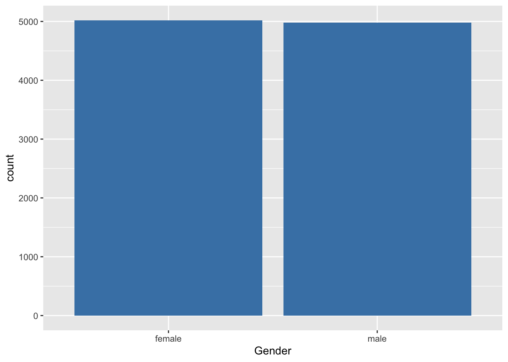 Er zijn weinig methoden voorhanden om nominale variabelen te beschrijven. In Voorbeeld 4.1 is de variable Gender kwalitatief nominaal. Alles is gezegd over de verdeling van het geslacht als we weergeven hoeveel vrouwen en mannen zijn opgenomen in de studie.
We stellen vast dat 5020 van de 10000 subjecten, ofwel 50.2% vrouwen in de studie zijn opgenomen.
Een staafdiagram geeft op de X-as de mogelijke uitkomsten van de variabele aan (bvb. geslacht). Daarbovenop komt een staaf met hoogte evenredig aan het totaal aantal keer dat die waarde voorkomt in de dataset. De staven staan los van elkaar met een breedte die constant is, maar verder willekeurig. Als de steekproef representatief is voor de populatie, dan krijgen we hier misschien een eerste impressie dat er iets meer vrouwen zijn in de populatie.
Voor numerieke continue variabelen wordt het moeilijk om de frequentie van alle uitkomstwaarden in een tabel te klasseren omdat veel waarden hoogstens 1 keer voorkomen. Het tak-en-blad diagram (in het Engels: stem and leaf plot is een middel om toch nog alle uitkomsten weer te geven. Een voorbeeld is weergegeven in onderstaande R-output voor het BMI in de NHANES studie.
stem(NHANES$BMI)##
## The decimal point is 1 digit(s) to the right of the |
##
## 1 | 33333333333333333344444444444444444444444444444444444444444444444444+37
## 1 | 55555555555555555555555555555555555555555555555555555555555555555555+1389
## 2 | 00000000000000000000000000000000000000000000000000000000000000000000+2264
## 2 | 55555555555555555555555555555555555555555555555555555555555555555555+2610
## 3 | 00000000000000000000000000000000000000000000000000000000000000000000+1693
## 3 | 55555555555555555555555555555555555555555555555555555555555555555555+635
## 4 | 00000000000000000000000000000000000000000000000000000000000000000000+255
## 4 | 55555555555555555555555556666666666666666666666666666666666777777777+46
## 5 | 0000011111122222233333444444444444
## 5 | 5556677777789999
## 6 | 133444
## 6 | 567899
## 7 |
## 7 |
## 8 | 111Hier wordt van alle uitkomsten het eerste cijfer of de eerste paar cijfers op een verticale lijn in volgorde uitgezet in de vorm van een boomstam. Daaraan worden horizontaal de bladeren gehecht, met name de laatste cijfers van de geobserveerde uitkomsten. De output geeft bijvoorbeeld aan dat er 3 personen zijn waarvan het afgeronde BMI 55 bedraagt, 2 personen met een afgerond BMI van 56, …. Gezien de studie zo groot is, is het tak-en-blad diagram niet erg praktisch voor dit voorbeeld.
In een tak-en-blad diagram krijgt men alle individuele uitkomsten nagenoeg exact te zien, terwijl de vorm die het diagram aanneemt reeds een idee van de verdeling geeft zoals in een histogram (zie verder). Een vuistregel om de vorm van de verdeling het best te zien is het aantal takken ongeveer gelijk te maken aan \(1 + \sqrt{n}\), waarbij \(n\) het aantal observaties voorstelt. Dit aantal kan uiteraard aangepast worden aan de omstandigheden. Een populair alternatief voor het tak en blad diagram is de eenvoudige frequentietabel. Deze kan men bekomen door de continue variabele (bvb. BMI) om te zetten in een kwalitatieve ordinale variabele, waarvoor vervolgens een frequentietabel wordt weergegeven.
Het grafisch equivalent van dergelijke frequentietabel noemt een histogram, hetgeen men in ggplot bekomt via
- Pipe de data van de NHANES study naar de
ggplotfunctie - Selecteer de variable BMI als de data om in de x-coordinaat te visualiseren voor het aestetics argument van ggplot gebruik hiervoor de
aesfunctie - Voeg een laag toe voor het histogram. Wanneer je geen aestetics
aesmeegeeft verkrijg je standaard absolute frequenties. Metfill=..counts..in de aestetics kan je de balken van het histogram inkleuren a.d.h.v. de absolute frequenties. - Indien je het wenst kan je op een histogram met densities ook nog een laag toevoegen met een niet parametrische densiteitsschatter voor de verdeling d.m.v. de
geom_densityfunctie.
NHANES %>%
ggplot(aes(x=BMI)) +
geom_histogram(aes(y=..density.., fill=..count..),bins=30) +
geom_density()Figuur 4.2: Histogram van het BMI in de NHANES studie.
Wanneer alle klassen een zelfde breedte hebben, worden de absolute of relatieve frequenties per klasse weergegeven door de hoogte van de bijhorende kolom. Bij ongelijke klassebreedtes is het de oppervlakte van de kolom die met de bijhorende klassefrequentie correspondeert. Omdat een histogram met ongelijke klassebreedtes moeilijker te interpreteren is, zijn histogrammen met gelijke klassebreedtes vaak te verkiezen. Als histogrammen voor verschillende groepen bekeken worden, vergemakkelijkt het gebruik van relatieve frequenties i.p.v. absolute frequenties de visuele vergelijkbaarheid.
Op het histogram in Figuur 4.2 worden densiteiten weergegeven en klassen met een breedte iets meer dan 5 eenheden.
De keuze van het aantal klassen is van belang bij een histogram. Als er te weinig klassen zijn, dan gaat veel informatie verloren. Als er teveel zijn, dan wordt het algemene patroon verdoezeld door een grote hoeveelheid overbodige details. Gewoonlijk kiest men tussen 5 en 15 intervallen, maar de specifieke keuze hangt af van het beeld van het histogram dat men te zien krijgt.
Een histogram is vooral geschikt om de distributie te schatten in grote datasets. Daar kan men dan veel intervallen gebruiken. Daarom heeft de ggplot functie standaard 30 intervallen.
Indien een voldoende aantal gegevens beschikbaar is, dan kan men een gladdere indruk van de verdeling van de gegevens bekomen door een zogenaamde kernel density schatter te bepalen. Zo’n schatter is een positieve functie die genormaliseerd is in die zin dat de oppervlakte onder de functie 1 is. Ze kan zo geïnterpreteerd worden dat de oppervlakte onder de functie tussen 2 punten \(a\) en \(b\) op de X-as, de kans voorstelt dat een lukrake meting in het interval \([a,b]\) gevonden wordt. Figuur 4.2 toont een histogram met kernel density schatter van de het BMI.
De verdeling kan ook geëvalueerd worden aan de hand van een box-and-whisker-plot, kortweg boxplot genoemd. Deze is meer compact dan een histogram en laat om die reden gemakkelijker vergelijkingen tussen verschillende groepen toe (zie verder). Een Boxplot voor het BMI wordt getoond in Figuur 4.3. De boxplot toont een doos lopend van het 25% tot 75% percentiel met een lijntje ter hoogte van de mediaan (het 50% percentiel) en verder 2 snorharen. Die laatste kunnen in principe lopen tot het minimum en maximum, of tot het 2.5% en 97.5 % of 5% en 95% percentiel. R kiest voor de kleinste en de grootste geobserveerde waarde die geen outlier of extreme waarde zijn. Een meting wordt hierbij een outlier genoemd wanneer ze meer dan 1.5 keer de boxlengte beneden het eerste of boven het derde kwartiel ligt. Een meting wordt een extreme waarde genoemd wanneer ze meer dan 3 keer de boxlengte beneden het eerste of boven het derde kwartiel ligt.
Het 25% percentiel of 25% kwantiel \(x_{25}\) van een reeks waarnemingen wordt gedefinieerd als een uitkomstwaarde \(x_{25}\) zodat minstens \(25\%\) van die waarnemingen kleiner of gelijk zijn aan \(x_{25}\) en minstens \(75\%\) van die waarnemingen groter of gelijk zijn aan \(x_{25}\). Het 75% percentiel of 75% kwantiel van een reeks waarnemingen definieert men als een uitkomstwaarde \(x_{75}\) zodat minstens 75% kleiner of gelijk zijn aan \(x_{75}\) en minstens \(25\%\) van die waarnemingen groter of gelijk zijn aan \(x_{75}\). Algemeen wordt het \(k\%\) percentiel van een reeks waarnemingen gedefinieerd als een waarde (van \(x\)) waarvoor de cumulatieve frequentie gelijk is aan \(k/100.\) Als er meerdere observaties aan voldoen neemt men vaak het gemiddelde van die waarden.
Einde definitie
In R kunnen die als volgt worden bekomen
quantile(NHANES$BMI,c(0.25,.5,.75),na.rm=TRUE)## 25% 50% 75%
## 21.58 25.98 30.89Figuur 4.3: Boxplot van BMI in de NHANES studie.
In ggplot maak je de boxplot als volgt:
NHANES %>%
ggplot(aes(x="",y=BMI)) +
geom_boxplot()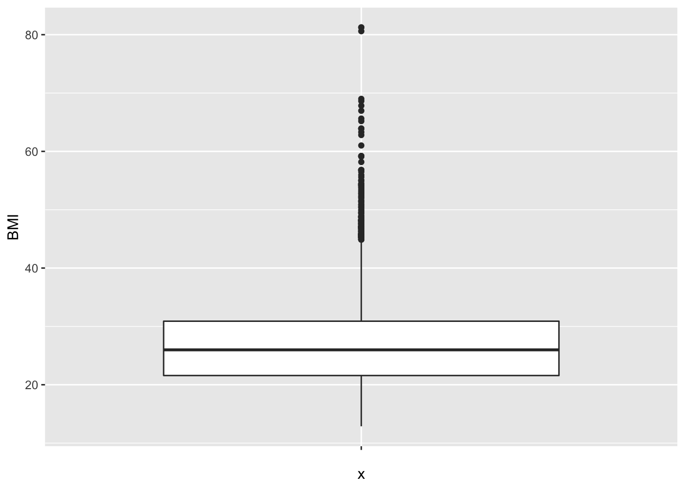
Bij de inspectie van een dataset speelt het detecteren van outliers in het algemeen een belangrijke rol. Ze kunnen wijzen op fouten, zoals tikfouten of andere fouten die gecheckt en gecorrigeerd moeten worden. Als het geen foutief genoteerde waarden zijn, dan kan het soms wijzen op een subject dat niet echt in de studiepopulatie thuis hoort. Als het in alle opzichten om een bona fide waarde gaat, dan nog is het belangrijk om outliers te detecteren: ze kunnen zeer invloedrijk zijn op de schatting van statistische parameters (zie Sectie 4.3). Als de conclusies van een studie anders liggen met of zonder inclusie van de outlier, dan is dit een ongewenst fenomeen. Men wil immers nooit dat 1 observatie beslissend is voor de conclusies. Dit soort onzekerheid ondermijnt de geloofwaardigheid van de onderzoeksresultaten en vraagt om verdere studie. Binnen de statistiek bestaat een grote waaier aan technieken, zogenaamde robuuste statistische technieken, die erop gericht zijn om de invloed van outliers te minimaliseren. In deze cursus gaan we hier slechts in zeer beperkte mate op in (zie Sectie 4.3, mediaan).
4.3 Samenvattingsmaten voor continue variabelen
Een histogram levert reeds een sterke samenvatting van de geobserveerde, continue gegevens, maar in wetenschappelijke rapporten is er zelden plaats om per geobserveerde variabele dergelijke grafiek voor te stellen. Om die reden is vaak een veel drastischere samenvattingsmaat noodzakelijk. In deze sectie geven we aan hoe de centrale locatie van de gegevens kan beschreven worden, alsook de spreiding van die gegevens rond hun centrale locatie.
4.3.1 Maten voor de centrale ligging
Het (rekenkundig) gemiddelde \(\overline{x}\) (spreek uit: x-streep of x-bar) van een reeks waarnemingen \(x_i, i=1, 2, \dots, n\) is per definitie de som van de observaties gedeeld door hun aantal \(n\):
\[\overline{x}= \frac{x_1 + x_2 + \dots + x_n}{n} =\sum_{i=1}^n x_i \frac{1}{n} \]
Einde definitie
Merk op dat het rekenkundig gemiddelde ook verkregen zou worden als gemiddelde voor een discrete distributie met kansen van 1/n op elke waarde uit de steekproef. Wanneer we het steekproefgemiddelde gebruiken dan schatten we de distributie in de populatie als het ware aan de hand van de empirische distributie van de data. We maken dus geen distributionele veronderstellingen hiervoor.
Een groot voordeel van het gemiddelde als een maat voor de centrale locatie van de observaties is dat het alle data-waarden efficiënt gebruikt vanuit statistisch perspectief. Dit wil zeggen dat ze (onder bepaalde statistische modellen) het maximum aan informatie uit de gegevens haalt en om die reden relatief gezien zeer stabiel blijft wanneer ze herberekend wordt op basis van een nieuwe, even grote steekproef die onder identieke omstandigheden werd bekomen. Bovendien beschrijft het gemiddelde ook verschillende belangrijke modellen voor de verdeling van de gegevens, zoals de Normale verdeling (zie Sectie 4.4). Een groot nadeel van het gemiddelde is dat het zeer gevoelig is aan de aanwezigheid van outliers in de dataset. Om die reden is het vooral een interessante maat van locatie wanneer de verdeling van de observaties (zoals weergegeven door bijvoorbeeld een histogram) min of meer symmetrisch is.
mean(NHANES$BMI,na.rm=TRUE)## [1] 26.66014#opnieuw is de na.rm statement hier nodig
#omdat ontbrekende waarden voorkomen.Indien men de grootste observatie (81.25) vervangt door 8125 om als het ware ene tikfout voor te stellen, dan wijzigt het rekenkundig gemiddelde naar 27.5 en dat terwijl er bijna 10000 BMI metingen zijn. Merk op dat het gemiddelde vrij sterk beïnvloed kan worden door één outlier.
Eigenschap
Als alle uitkomsten \(x_i\) met een willekeurige constante \(a\) worden vermenigvuldigd, dan ook het gemiddelde van die reeks uitkomsten. Als bij alle uitkomsten een constante \(a\) wordt opgeteld, dan ook bij het gemiddelde van die reeks uitkomsten. Formeel betekent dit:
\[\begin{eqnarray*} \overline{ax} &= &a \overline{x} \\ \overline{a + x} &= &a + \overline{x} \end{eqnarray*}\]
Voor 2 reeksen getallen \(x_i\) en \(y_i\), \(i=1,...,n\), geldt dat het gemiddelde van de som van de observaties gelijk is aan de som van hun gemiddelden:
\[\begin{equation*} \overline{x + y} = \overline{x} + \overline{y}. \end{equation*}\]
Als de gegevens \(x_i\) enkel de waarden 0 of 1 aannemen, dan is \(\overline{x}\) de proportie subjecten voor wie de waarde 1 werd geobserveerd. Immers, zij \(n_1\) het aantal subjecten binnen de groep van \(n\) subjecten waarvoor de waarde 1 werd geobserveerd, dan is
\[\begin{equation*} \overline{x}= \sum_{i=1}^n \frac{x_i}{n} = \frac{n_1}{n}. \end{equation*}\]
Bijvoorbeeld, als we de variabele Gender zó coderen dat mannen een waarde 0 aannemen en vrouwen een waarde 1, dan is het gemiddelde van de variabele Gender gelijk aan 50.2%, hetgeen de proportie is van het aantal vrouwen in de studie. Een percentage kan dus steeds opgevat worden als het gemiddelde van een geschikte variabele.
Einde eigenschap
Een centrale maat die robuuster reageert dan het gemiddelde, d.w.z. minder of niet gevoelig is aan outliers, is de mediaan of het 50% percentiel.
De mediaan, het 50% percentiel of het 50% kwantiel \(x_{50}\) van een reeks waarnemingen \(x_i, i=1, 2, \dots, n\) is per definitie een uitkomstwaarde \(x_{50}\) zodat minstens \(50\%\) van die waarnemingen groter of gelijk zijn aan \(x_{50}\) en minstens \(50\%\) van die waarnemingen kleiner of gelijk zijn aan \(x_{50}\).
Einde definitie
Om de mediaan te schatten, rangschikt men eerst de gegevens volgens grootte. Als het aantal observaties \(n\) oneven is, dan is een schatting voor de mediaan de middelste waarneming. Indien \(n\) even is, dan zijn er 2 middelste waarnemingen en schat men de mediaan (meestal) als hun gemiddelde. Een voordeel van de mediaan is dat ze niet gevoelig is aan outliers. In het bijzonder kan ze vaak nuttig aangewend worden wanneer sommige gegevens gecensureerd zijn. Dit wil zeggen dat men voor een aantal gegevens enkel weet dat ze boven of onder een bepaalde drempelwaarde liggen.
median(NHANES$BMI,na.rm=TRUE)## [1] 25.98#Merk op dat we hier gebruik maken van het argument na.rm=TRUE
#Dit komt omdat we niet beschikken over het BMI
#voor elke persoon: ontbrekende waarnemingen
#Die worden in R als een NA voorgesteld
#Als we het argument na.rm=TRUE gebruiken wordt
#de mediaan berekend op basis van de beschikbare observatiesIndien men de grootste observatie (81.25) vervangt 8125, dan wijzigt de mediaan niet. Merk ook op dat de mediaan lager is dan het gemiddelde, hij is minder gevoelig voor de outliers in de dataset.
De modus van een reeks observaties is de waarde die het meest frequent is, of wanneer de gegevens gegroepeerd worden, de klasse met de hoogste frequentie.
Einde definitie
De modus wordt niet vaak gebruikt in statistische analyse omdat haar waarde sterk afhangt van de nauwkeurigheid waarmee de gegevens werden gemeten. Zo is de modus van de reeks observaties \(1, 1, 1, 1.5, 1.75, 1.9, 2, 2.1, 2.4\) gelijk aan 1, maar wordt ze 2 wanneer alle observaties afgerond worden tot gehele getallen. Bovendien is de modus niet eenvoudig te schatten voor continue data waar de frequentie van elke geobserveerde waarde meestal 1 is. De modus is daarom het meest zinvol voor kwalitatieve en discrete numerieke gegevens, waar ze de meest frequente klasse aanduidt.
Als de observaties uit een symmetrische verdeling afkomstig zijn, vallen de mediaan en het gemiddelde nagenoeg samen (als de geobserveerde verdeling perfect symmetrisch is, vallen ze theoretisch exact samen). De beste schatter voor het centrum van de verdeling op basis van de beschikbare steekproef is dan het gemiddelde eerder dan de mediaan van die observaties. Inderdaad, als men telkens opnieuw een lukrake steekproef neemt uit de gegeven studiepopulatie en voor elke steekproef het gemiddelde en de mediaan berekent, dan zal het gemiddelde minder variëren van steekproef tot steekproef dan de mediaan. Ze is bijgevolg stabieler en wordt daarom een meer precieze schatter genoemd. Intuïtief kan men begrijpen dat het gemiddelde meer informatie uit de gegevens gebruikt: niet alleen of iets groter of kleiner is dan \(x_{50}\) maar ook hoeveel groter of kleiner de exacte waarde van elke observatie is, wordt in de berekening betrokken.
Een niet-symmetrische verdeling wordt scheef genoemd. Als de waarden rechts van de mediaan verder uitlopen dan links, dan is de verdeling scheef naar rechts (in het Engels: positively skew) en is het gemiddelde (meestal) groter dan de mediaan. Als de waarden links van de mediaan verder uitlopen dan rechts, dan is de verdeling scheef naar links (in het Engels: negatively skew) en is het gemiddelde (meestal) kleiner dan de mediaan.
Einde definitie
Voor een niet-symmetrische verdeling is de mediaan veelal een beter interpreteerbare maat dan het gemiddelde omdat ze minder beïnvloed is door de staarten van de verdeling en daarom beter het centrum van de verdeling aanduidt. Maar in sommige gevallen, zoals bijvoorbeeld voor `de gemiddelde opbrengst per week’, blijft het gemiddelde zinvol omdat het meteen verwijst naar de totale opbrengst over alle weken (gelijk aan \(n\) keer het gemiddelde als \(n\) weken werden geobserveerd). Ook voor kwalitatieve variabelen kan een gemiddelde zinvol zijn. Voor binaire nominale variabelen die als 1 of 0 gecodeerd zijn, geeft het gemiddelde immers het percentage observaties gelijk aan 1 weer. Voor ordinale variabelen die bijvoorbeeld gecodeerd zijn als \(1, 2, 3, ...\) levert het gemiddelde soms nuttigere informatie dan de mediaan. Niettemin berust het dan op de impliciete onderstelling dat een wijziging van score van 1 naar 2 even belangrijk is als een wijziging van 2 naar 3.
Om scheve verdelingen in een paar woorden te beschrijven is het vaak nuttig om
- ofwel de gegevens te beschrijven in termen van percentielen,
- ofwel de gegevens te transformeren naar een andere schaal (bvb. door logaritmen te nemen), zodat ze op de nieuwe schaal bij benadering symmetrisch verdeeld zijn.
Wanneer het gemiddelde groter is dan de mediaan en alle metingen positief zijn (vb concentraties, BMI), dan is een logaritmische transformatie van de gegevens vaak nuttig om de scheefheid weg te nemen. In dit geval is vooral het geometrisch gemiddelde interessant.
Het geometrische gemiddelde van een reeks waarnemingen \(x_i, i=1, 2, \dots, n\) ontstaat door er de natuurlijke logaritme van te berekenen, het gemiddelde hiervan te nemen en dit vervolgens terug te transformeren naar de originele schaal door er de exponentiële functie van te nemen:
\[\begin{equation*} \sqrt[n]{\prod\limits_{i=1}^n x_i} = \exp\left\{\frac{1}{n} \sum_{i=1}^n \log(x_i)\right\} \end{equation*}\]
Einde definitie
Geometrisch gemiddelde ligt dichter bij de mediaan dan het gemiddelde
log-transformatie verwijdert scheefheid
Is vaak een meer geschikte maat voor centrale locatie dan de mediaan:
- Gebruikt alle observatie: is meer precies
- Is het rekenkundig gemiddelde van log-transformeerde data \(\rightarrow\) klassieke statistische methoden kunnen direct worden gebruikt, b.v. hypothese testen en betrouwbaarheidsintervallen (zie hoofdstuk 5)
- Veel biologische en chemische variabelen zoals concentraties, intensiteiten, etc kunnen niet negatief zijn.
- Verschillen op log schaal hebben de betekenis van een
log fold change:
\[ \log (B) - \log(A)= \log(\frac{B}{A})=\log(FC_\text{B vs A}) \]
In Genomics wordt de \(\log_2\) transformatie veel gebruikt.
Een verschil van 1 op \(\log_2\) schaal betekent een verdubbeling op de originele schaal \(FC=2\).
logSummary <-
NHANES %>%
filter(Gender=="female") %>%
summarize(
logMean = mean(BMI %>% log2,na.rm=TRUE),
sd = sd(BMI %>% log2,na.rm=TRUE),
mean = mean(BMI,na.rm=TRUE),
median = median(BMI,na.rm=TRUE)
) %>%
mutate(geoMean=2^logMean)
NHANES %>%
filter(Gender=="female") %>%
ggplot(aes(x=BMI %>% log2)) +
geom_histogram(
aes(y=..density.., fill=..count..),
bins=30) +
geom_density() +
stat_function(fun=dnorm,
color="red",
args=list(
mean=logSummary$logMean,
sd=logSummary$sd)
)Figuur 4.4: Boxplot van BMI en log(BMI) in de NHANES studie.
logSummary## # A tibble: 1 x 5
## logMean sd mean median geoMean
## <dbl> <dbl> <dbl> <dbl> <dbl>
## 1 4.68 0.408 26.8 25.6 25.7In situaties waar de log-transformatie inderdaad de scheefheid wegneemt, zal het geometrisch gemiddelde dichter bij de mediaan liggen dan het gemiddelde. Wanneer de verdeling scheef is, is ze soms zelfs een nuttigere maat voor centrale locatie dan de mediaan:
omdat ze ook gebruik maakt van de exacte waarden van de observaties en daarom doorgaans preciezer is dan de mediaan;
omdat ze, op een transformatie na, berekend wordt als een rekenkundig gemiddelde (weliswaar van de logaritmisch getransformeerde observaties) en algemene statistische technieken voor een gemiddelde (zoals betrouwbaarheidsintervallen (zie volgende hoofdstukken) en toetsen van hypothesen (zie volgende hoofdstukken) daardoor vrijwel rechtstreeks toepasbaar zijn voor geometrische gemiddelden.
Het gemiddelde en mediane BMI bedraagt 26.66 en 25.98 , respectievelijk. Het gemiddelde is hier groter dan de mediaan omdat de BMI scheef verdeeld is naar rechts (zie Figuur 4.4). De verdeling wordt meer symmetrisch na log-transformatie. Het gemiddelde en mediane log-BMI liggen ook dichter bij elkaar en bedragen respectievelijk 3.25 en 3.26. De geometrisch gemiddelde BMI-concentratie bekomen we door de exponentiële functie te evalueren in 3.25, hetgeen ons 25.69 oplevert. Merk op dat dit inderdaad beter met de mediaan overeenstemt dan het rekenkundig gemiddelde.
Einde voorbeeld
Tot slot, vooraleer een eenvoudige maat voor de centrale ligging (en spreiding) te construeren of interpreteren, is het goed om altijd eerst de volledige verdeling te bekijken! Immers, stel dat men het gemiddelde of mediaan berekent van gegevens uit een bimodale verdeling (d.i. een verdeling met 2 modi, voor bvb. zieken en niet-zieke dieren). Dan kan het gemiddelde of mediaan makkelijk een zeer zeldzame waarde aannemen die geenszins in de buurt van 1 van beide maxima ligt.
4.3.2 Spreidingsmaten
Nadat de centrale ligging van de gegevens werd bepaald, is men in tweede instantie geïnteresseerd in de spreiding van de gegevens rond die centrale waarde. Er zijn verschillende redenen waarom daar interesse in bestaat:
- Om risico’s te berekenen (zie Sectie 4.4) volstaat het niet om de centrale locatie van de gegevens te kennen, maar moet men bovendien weten hoeveel de gegevens rond die waarde variëren. Inderdaad, stel dat men wenst te weten welk percentage van de subjecten een BMI heeft van boven de 35. Wetende dat een geometrisch gemiddelde van 25.69 wordt geobserveerd, zal dat percentage relatief hoog zijn wanneer de metingen zeer gespreid zijn en relatief laag anders.
- Veldbiologen zijn vaak geïnteresseerd in de mate waarin dieren of planten verspreid zijn over een zeker studiegebied. Op die manier kunnen ze immers leren over de relaties tussen individuen onderling en met hun omgeving. Daartoe zal men in de praktijk op verschillende plaatsen in het studiegebied tellingen maken van het aantal individuen op die plaats. Men kan aantonen dat, onder bepaalde veronderstellingen, individuen lukraak verspreid zijn over het studiegebied wanneer de spreiding op die tellingen, zoals gemeten door de variantie (zie verder), van dezelfde grootte-orde is als de gemiddelde telling. Indien de spreiding groter is, dan hebben individuen de neiging om zich te groeperen. Andersom, indien de spreiding op die tellingen lager is dan de gemiddelde telling, dan zijn de individuen zeer uniform verdeeld over het studiegebied.
- Stel dat men een zekere uitkomst (bvb. het aantal species ongewervelde dieren in een stuk bodemkorst) wenst te vergelijken tussen 2 groepen (bvb. gebieden met en zonder bosbrand), dan zal men een duidelijk beeld van het groepseffect krijgen wanneer de uitkomst weinig gespreid is, maar een veel minder duidelijk beeld wanneer de gegevens meer chaotisch (en dus meer gespreid) zijn. Om uit te maken of een interventie-effect toevallig of systematisch is, moet men daarom een idee hebben van de spreiding op de gegevens.
Dat uitkomsten variëren tussen individuen en binnen individuen omwille van allerlei redenen ligt aan de basis van de statistische analyse van veel fenomenen. Het goed beschrijven van variatie naast de centrale locatie van de gegevens is daarom belangrijk! Hierbij zal men typisch een onderscheid maken tussen variatie die men kan verklaren (door middel van karakteristieken, zoals bijvoorbeeld de leeftijd, van de bestudeerde individuen) en onverklaarde variatie. We gaan dieper in op dit onderscheid in Hoofdstuk 6 rond lineaire regressie.
Variatie betekent dat niet alle observaties \(x_i\) gelijk zijn aan het gemiddelde \(\overline{x}\). De afwijking \(x_i - \bar{x}\) is om die reden interessant. Het gemiddelde van die afwijkingen is echter altijd 0 (verifieer!) omdat positieve en negatieve afwijkingen mekaar opheffen. Bijgevolg levert de gemiddelde afwijking geen goede maat op voor de variatie en is het beter om bijvoorbeeld naar kwadratische afwijkingen \((x_i - \bar{x})^2\) te kijken. Het gemiddelde van die kwadratische afwijkingen rond het gemiddelde, het gemiddelde dus van \((x_i - \bar{x})^2\), levert daarom wel een goede maat op. Merk op dat we bij het berekenen van het gemiddelde niet delen door het aantal observaties \(n\), maar door \(n-1\) waarbij we corrigeren voor het feit dat we voor de berekening van de steekproef variantie 1 vrijheidsgraad hebben gespendeerd aan het schatten van het gemiddelde.
De variantie een reeks waarnemingen \(x_i, i=1, 2, \dots, n\) is per definitie
\[\begin{equation*} s^2_x = \sum_{i=1}^{n} \frac{(x_i - \bar{x})^2}{n-1} \end{equation*}\]
Als duidelijk is om welke waarnemingen het gaat, wordt dit ook met \(s^2\) genoteerd.
Einde definitie
Indien alle observaties gelijk waren en er dus geen variatie was, dan zou hun variantie 0 bedragen. Hoe meer de gegevens uitgesmeerd zijn rond hun gemiddelde, hoe groter \(s^2\). Helaas is de waarde van de variantie zelf niet gemakkelijk te interpreteren. Dit is deels omdat door het kwadrateren de variantie niet langer de dimensie van de oorspronkelijke waarnemingen heeft. Handiger om mee te werken is daarom de standaarddeviatie of standaardafwijking:
\[\begin{equation*} s_x= \sqrt{s_x^2} . \end{equation*}\]
De standaarddeviatie is gedefinieerd voor elke numerieke variabele, maar is vooral nuttig omdat voor heel wat variabelen (in het bijzonder Normaal verdeelde variabelen - zie Sectie 4.4) bij benadering 68% van de waarnemingen liggen tussen \(\bar{x} - s_x\) en \(\bar{x} + s_x\), en 95% van de waarnemingen liggen tussen17 \(\bar{x} - 2 s_x\) en \(\bar{x} + 2 s_x\). Deze intervallen noemt men respectievelijk 68% en 95% referentie-intervallen. Het is precies deze eigenschap die de standaarddeviatie zo nuttig maakt in de praktijk. De standaarddeviatie van een reeks waarnemingen wordt vaak afgekort als SD in de wetenschappelijke literatuur.
Eigenschap
Als alle uitkomsten \(x_i\) met een willekeurige constante \(a\) worden vermenigvuldigd, dan wordt hun variantie vermenigvuldigd met \(a^2\) en hun standaarddeviatie met \(|a|\) (de absolute waarde van \(a\)). Als bij alle uitkomsten \(a\) wordt opgeteld, wijzigen hun variantie en standaarddeviatie niet.
Einde eigenschap
# Het gebruik van functie sd() levert de standarddeviatie
# van de variabele BMI in de NHANES dataset.
# Het na.rm=TRUE argument wordt gebruikt omdat er
# ontbrekende waarnemingen voorkomen.
sd(NHANES$BMI,na.rm=TRUE)## [1] 7.376579 # levert de variantie van de variabele BMI
var(NHANES$BMI,na.rm=TRUE)## [1] 54.41392Wanneer een variabele niet Normaal verdeeld is (dit is bijvoorbeeld het geval voor het BMI gezien het niet symmetrisch verdeeld is), dan geldt niet langer dat bij benadering 95% van de waarnemingen ligt tussen \(\bar{x} - 2 s\) en \(\bar{x} + 2 s\). Een symmetrische maat voor de spreiding van de gegevens, zoals de standaarddeviatie, is dan niet langer interessant. In dat geval zijn de range en interkwantielafstand betere maten.
Het bereik of de range \(R_x\) van een reeks waarnemingen \(x_i, i=1,2,...,n\), is per definitie het verschil tussen de grootste en kleinste geobserveerde waarde. De interkwartielafstand van een reeks waarnemingen \(x_i, i=1,2,...,n\) is per definitie de afstand tussen het derde kwartiel \(x_{75}\) en het eerste kwartiel \(x_{25}\). Dat wordt ook grafisch weergegeven op een boxplot (breedte van de box). Hierbinnen liggen circa 50% van de observaties. Circa 95% van de observaties kan men vinden tussen het 2.5% en 97.5% percentiel.
Einde definitie
Het bereik is zeer gevoelig voor outliers en is systematisch afhankelijk van het aantal observaties: hoe groter \(n,\) hoe groter men \(R_x\) verwacht. Om die reden vormt een interkwartielafstand een betere maat voor de spreiding van de gegevens dan de range.
Tenslotte is het vaak zo dat de gegevens meer gespreid zijn naarmate hun gemiddelde hogere waarden aanneemt. De variatiecoëfficiënt=\(VC_x\) standaardiseert daarom de standaarddeviatie door ze uit te drukken als een percentage van het gemiddelde
\[\begin{equation*} VC_x = \frac{s_x}{\bar{x}} 100\%. \end{equation*}\]
Omdat ze gestandaardiseerd is, dient ze beter dan de standaarddeviatie zelf om de spreiding op de gegevens te vergelijken tussen populaties met een verschillend gemiddelde. De variatiecoëfficiënt heeft verder de aantrekkelijke eigenschap dat ze geen eenheden heeft en ongevoelig is voor herschaling van de gegevens (d.w.z. wanneer alle gegevens met een constante \(a\) worden vermenigvuldigd, dan is \(VC_{ax}=VC_x\)).
4.4 De Normale benadering van gegevens
Bij biologische en chemische data is het vaak zo dat het histogram van een continue meting bij verschillende subjecten de karakteristieke vorm heeft van de Normale verdeling. Dat is bijvoorbeeld zo als men een histogram maakt van het logaritme van de totale cholestorol. Rond 1870 opperde de wereldberoemde Belg Adolphe Quetelet (die tevens de eerste student was die een doctoraat behaalde aan de Universiteit Gent) de idee om deze curve als `ideaal histogram’ te gebruiken voor de voorstelling en vergelijking van gegevens. Dit zal handig blijken om meer inzicht te krijgen in de gegevens op basis van een minimum aantal samenvattingsvatten, zoals het gemiddelde en de standaarddeviatie die vaak in wetenschappelijke rapporten vermeld staan.
4.4.1 QQ-plots
Hoewel heel wat metingen in de biologische wetenschappen en scheikunde, zoals concentraties van een bepaalde stof, scheef verdeeld zijn naar rechts, worden ze door het nemen van een logaritme vaak getransformeerd naar gegevens waarvoor het histogram de vorm heeft van een Normale dichtheidsfunctie. Dit is uiteraard niet altijd zo en stappen om te verifiëren of observaties Normaal verdeeld zijn, zijn daarom van groot belang omdat heel wat technieken uit de verdere hoofdstukken er zullen van uit gaan dat de gegevens Normaal verdeeld zijn. Hoewel een vergelijking van het histogram van de gegevens met de vorm van de Normale curve wel inzicht geeft of de gegevens al dan niet Normaal verdeeld zijn, is dit vaak niet makkelijk te zien en wordt de uiteindelijke beslissing nogal makkelijk beïnvloed door de keuze van de klassebreedtes op het histogram. Om die reden zullen we kwantielgrafieken gebruiken die duidelijker toelaten om na te gaan of gegevens Normaal verdeeld zijn.
QQ-plots of kwantielgrafieken (in het Engels: quantile-quantile plots) zijn grafieken die toelaten te verifiëren of een reeks observaties lukrake trekkingen zijn uit een Normale verdeling. Met andere woorden, ze laten toe om na te gaan of een reeks observaties al dan niet de onderstelling tegenspreken dat ze realisaties zijn van een reeks Normaal verdeelde gegevens. Het principe achter deze grafieken is vrij eenvoudig. Verschillende percentielen die men heeft berekend voor de gegeven reeks observaties worden uitgezet t.o.v. de overeenkomstige percentielen die men verwacht op basis van de Normale curve. Als de onderstelling correct is dat de gegevens Normaal verdeeld zijn, dan komen beide percentielen telkens vrij goed met elkaar overeen en verwacht men bijgevolg een reeks puntjes min of meer op een rechte te zien. Systematische afwijkingen van een rechte wijzen op systematische afwijkingen van Normaliteit. Lukrake afwijkingen van een rechte kunnen het gevolg zijn van toevallige biologische variatie en zijn daarom niet indicatief voor afwijkingen van Normaliteit.
Om inzicht te krijgen in QQ-plots simuleren we eerst data uit de normale verdeling om te zien hoe deze plots eruit zien als de data normaal verdeeld zijn.
- We simuleren data voor 9 steekproeven met een gemiddeld van 18 en een standaard afwijking van 9.
n <- 20
mu <- 18
sigma <- 9
nSamp <-9
normSim <- matrix(rnorm(n*nSamp,mean=mu,sd=sigma),nrow=n) %>% as.data.frameWe gaan nu de data visualiseren.
- Merk op dat de data niet in het tidy formaat is.
- De data voor elke groep/simulatie staat naast elkaar in de kolommen.
We converteren het in het tidy formaat via de
gatherfunctie. Hierbij wordt een eerste kolom gemaakt samp die de kolomnamen van de originele dataset normSim voor elk overeenkomstig gesimuleerd data punt bij zal houden. De inhoud van de kolommen van de originele dataset normSim, de gesimuleerde waarden, worden opgeslagen in de variable met naam data.we maken een ggplot histogram voor de variabele data
Aan de hand van de functie
facet_wrapkunnen we de data opsplitsen volgens de variabele samp. We krijgen dus een histogram voor elk sample.
normSim %>%
gather(samp,data) %>%
ggplot(aes(x=data)) +
geom_histogram(aes(y=..density.., fill=..count..),bins=30) +
geom_density(aes(y=..density..)) +
facet_wrap(~samp)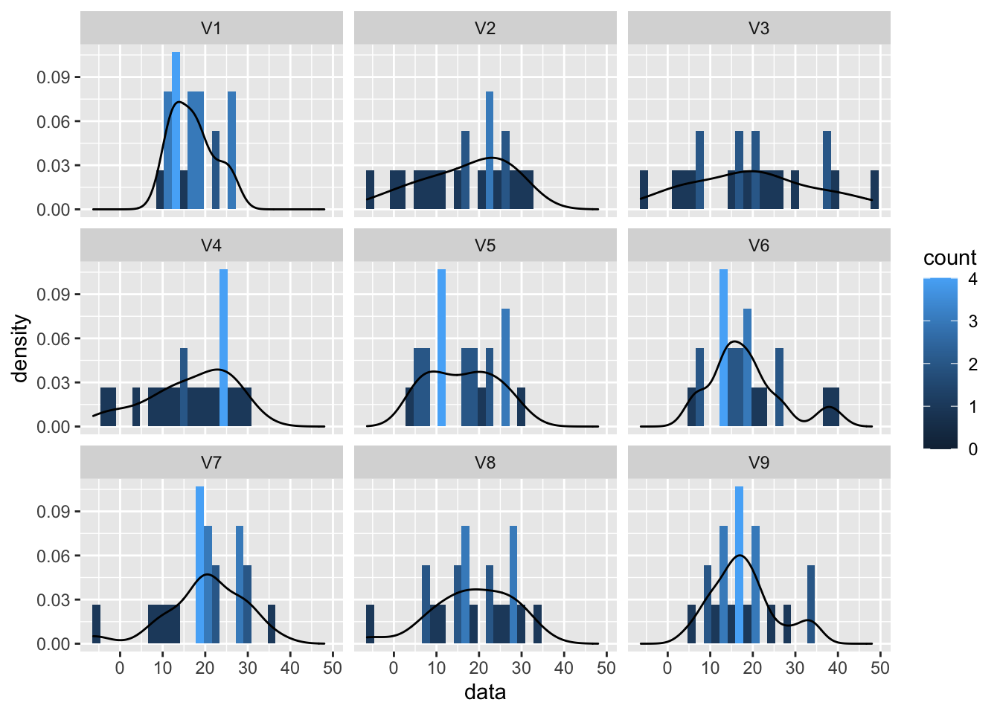
Gezien er vrij weinig data punten zijn en omdat er veel distributies vergeleken moeten worden is het handiger om dit via een boxplot te doen.
normSim %>%
gather(samp,data) %>%
ggplot(aes(x = samp,y = data)) +
geom_boxplot(outlier.shape=NA) +
geom_point(position="jitter")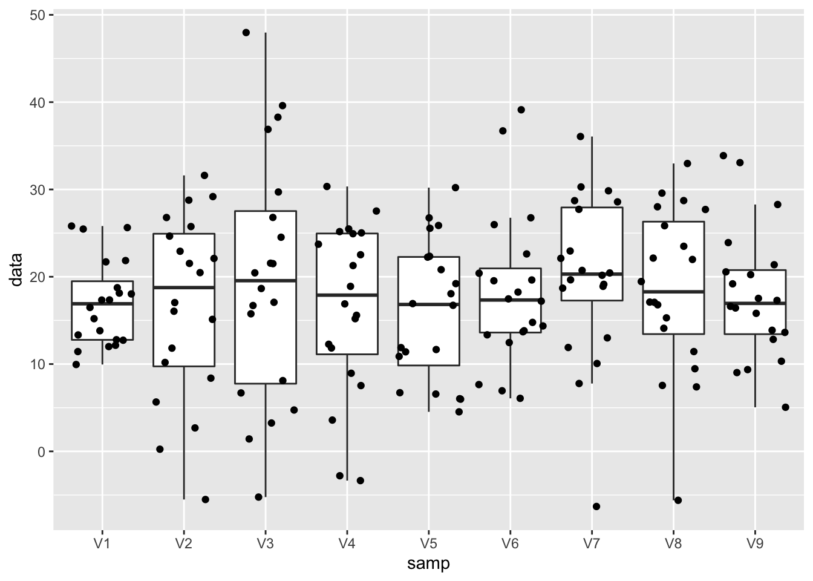
Hoewel alle observaties in alle steekproeven uit dezelfde populatie zijn getrokken zien we toch vrij grote fluctuaties van steekproef tot steekproef in de mediaan, maar zeker ook in de boxgrootte en het bereik van de data in elke steekproef. Dus ondanks het feit dat we over een vrij grote steekproef beschikken (20 observaties) is er toch een grote variabiliteit van steekproef tot steekproef.
We gaan nu normaliteit na via QQ-plot.
- Zet data om in tidy data
- maak een ggplot object
- Voeg een laag toe met de QQ-plot via de functie
geom_qq - Voeg een laag toe met de rechte in de QQ-plot via de functie
geom_qq_lineom te kunnen evalueren hoe goed de data een normale verdeling volgt.
normSim %>%
gather(samp,data) %>%
ggplot(aes(sample=data)) +
geom_qq() +
geom_qq_line() +
facet_wrap(~samp)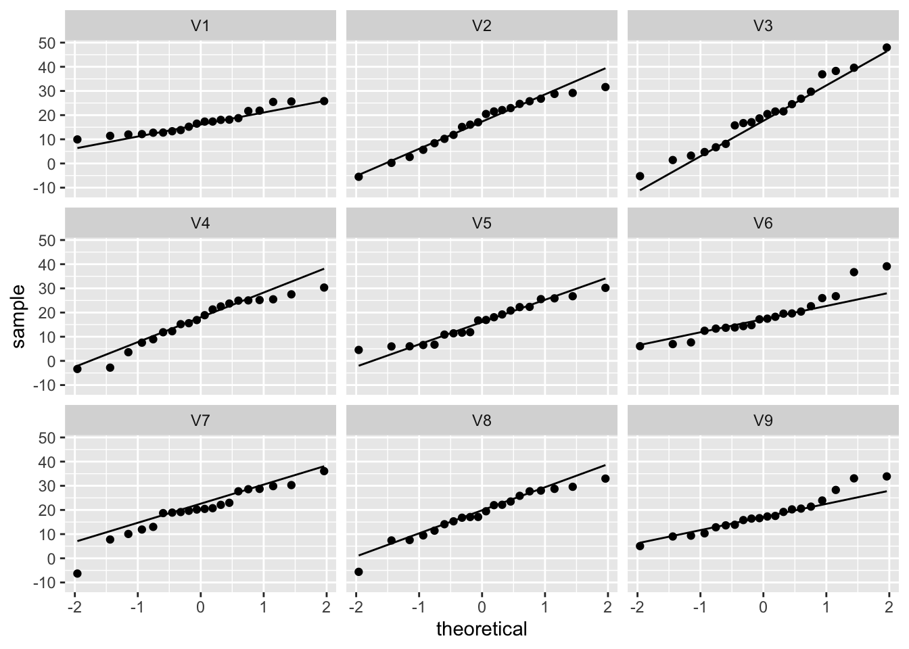
Zelf voor Normal data zien we duidelijk nog afwijkingen door sampling variabiliteit! De plots laten ons toe om ons visueel te trainen om QQ-plots van Normale data te herkennen.
Om de interpretatie van de QQ-plot goed te kunnen illustreren gaan we een histogram en QQ-plot naast elkaar zetten.
D.m.v. het package gridExtra kunnen we meerdere GG-plot objecten in een matrix op dezelfde plot afbeelden.
- We maken een eerste object aan met het histogram. We slaan dit nu op als object p1 in plaats van dit te visualiseren.
- Maak een object p2 met de QQ-plot
- Gebruik de functie
grid.arrangeom de objecten p1 en p2 af te beelden en we geven aan dat we dit in 2 kolommen zullen doenncol=2. (je kan ook de dimensie in rijen geven (nrow=1))
library(gridExtra)
p1 <- NHANES %>% filter(Gender=="female"&!is.na(BMI)) %>%
ggplot(aes(x=BMI))+
geom_histogram(aes(y=..density.., fill=..count..)) +
xlab("BMI") +
ggtitle("All females in study") +
geom_density(aes(y=..density..))
p2 <- NHANES %>% filter(Gender=="female"&!is.na(BMI)) %>%
ggplot(aes(sample=BMI)) +
geom_qq() +
geom_qq_line()
grid.arrange(p1,p2,ncol=2)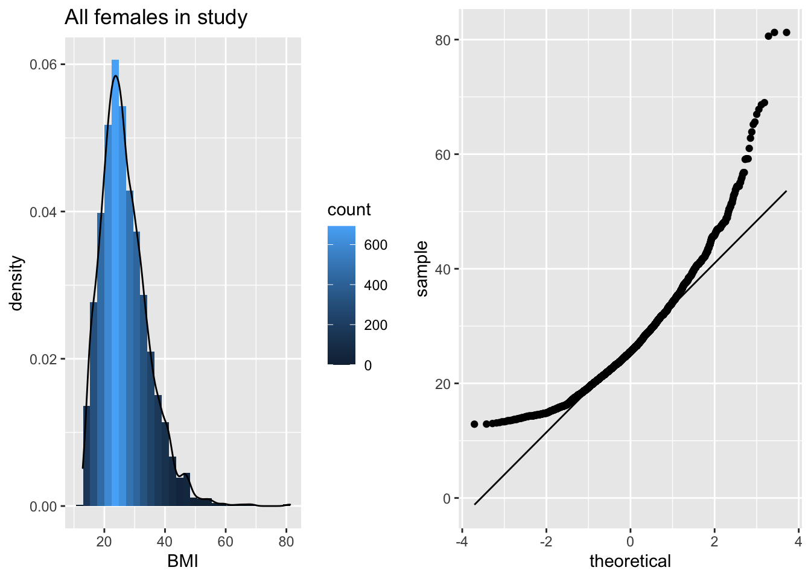
The QQ-plot toont dat de kwantielen van de data in de steekproef
groter zijn (boven de lijn liggen) dan wat we verwachten voor Normaal verdeelde data in de linkerstaart: compressie van de linkerstaart t.o.v. de Normale verdeling. De waarden in de linkerstaart liggen dus dichter bij top van de distributie dan wat we verwachten voor normaal verdeelde data.
groter zijn (boven de lijn liggen) dan wat we verwachten voor Normaal verdeelde data: lange staart naar rechts. De waarden in de rechterstaart liggen dus verder van de top van de distributie dan wat we verwachten voor normaal verdeelde data.
We zien dus duidelijk dat de data scheef verdeeld zijn naar rechts.
4.5 Samenvattingsmaten voor categorische variabelen
De samenvattingsmaten uit de vorige sectie (gemiddelde, mediaan, standaarddeviatie, …) kunnen niet zomaar toegepast worden voor de beschrijving van categorische variabelen. In deze sectie gaan we hier dieper op in, daarbij onderscheid makend tussen enerzijds gegevens die uit prospectieve studies of lukrake steekproeven afkomstig zijn, en anderzijds gegevens uit retrospectieve studies.
4.5.1 Prospectieve studies en lukrake steekproeven
Een bioloog verzamelt `s nachts bladerafval op een lukrake plaats van 1 m\(^2\) in 2 wouden, waarvan 1 met klei- en 1 met kalkgrond. Op elke plaats telt hij het aantal houtluizen van de species Armadilidium of Oniscus, met als doel na te gaan of de ene soort vaker voorkomt op kleigrond dan op kalkgrond18. Tabel 4.2 toont de bekomen gegevens. Hier stelt \(a\) (\(c\)) het aantal houtluizen van de soort Armadilidium (Oniscus) voor op kleigrond, en \(b\) (\(d\)) het aantal houtluizen van de soort Armadilidium (Oniscus) op kalkgrond.
| Armadil. | Oniscus | Totaal | |
|---|---|---|---|
| Klei | 14 (a) | 6 (c) | 20 (a+c) |
| Kalk | 22 (b) | 46 (d) | 68 (b+d) |
| Totaal | 36 (a+b) | 52 (c+d) | 88 (n) |
Einde voorbeeld
Er zijn verschillende manieren om de resultaten van deze studie te beschrijven. De kans dat 1 van beide species houtluizen van de soort Armadilidium is, is \(p_{kl}=a/(a+c)=0.70\) of 70% op kleigrond en \(p_{ka}=b/(b+d)=0.32\) of 32% op kalkgrond.
Het absolute risico verschil of absolute kansverschil op een gegeven gebeurtenis (bvb. om Armadilidium aan te treffen) voor populatie T (Test, bvb. kleigrond) versus C (Controle, bvb. kalkgrond) wordt met ARV genoteerd en gedefinieerd als het verschil
\[\begin{equation*} ARV=p_T-p_C \end{equation*}\]
tussen de kansen dat deze gebeurtenis zich voordoet in populaties T en C.
Einde definitie
Het ARV op Armadilidium tussen klei- en kalkgrond bedraagt 0.38, hetgeen suggereert dat de kans dat 1 van beide species houtluizen van de soort Armadilidium is, 38% hoger is op kleigrond dan op kalkgrond. Een absoluut kansverschil van 0 drukt uit dat de overeenkomstige kansen even groot zijn in beide populaties en dat beide populaties dus vergelijkbaar zijn in termen van de bestudeerde uitkomst.
Het absolute kansverschil zegt echter niet alles omtrent het bestudeerde effect. Een kansverschil kan immers een grotere impact hebben alnaargelang beide proporties \(p_T\) en \(p_C\) dicht bij 0 of 1 liggen, dan wanneer ze in de buurt van 0.5 liggen. Bijvoorbeeld, wanneer we de proportie vrouwen jonger dan 60 jaar meten die borstkanker ontwikkelen, is een risicoverschil tussen \(p_A=0.01\) voor vrouwen die het allel Leu/Leu bezitten op het BRCA1 gen en \(p_B=0.001\) voor de overige vrouwen, wellicht belangrijker dan een verschil tussen \(p_C=0.41\) en \(p_D=0.401\) voor beide populaties. Een uitspraak dat het risico 0.9% lager is in de ene dan in de andere populatie geeft om die reden slechts een beperkt beeld van het belang van die reductie. Een goede vergelijking van risico’s, kansen of percentages moet om die reden ook rekening houden met het basisrisico (d.w.z. de kans op de bestudeerde uitkomst in een referentiepopulatie). Het ARV doet dit niet, in tegenstelling tot volgende associatiemaat.
Het relatief risico op een gegeven gebeurtenis (bvb. om Armadilidium aan te treffen) voor populatie T (Test, bvb. kleigrond) versus C (Controle, bvb. kalkgrond) wordt met RR genoteerd en gedefinieerd als het quotiënt
\[\begin{equation*} RR=\frac{p_T}{p_C} \end{equation*}\]
van de kansen dat deze gebeurtenis zich voordoet in populaties T en C.
Einde definitie
In de studie naar houtluizen bedraagt dit \(RR=0.70/0.32=2.2\). Dit suggereert dat er 2.2 keer zoveel kans om een houtluis van de soort Armadilidium (i.p.v. Oniscus) aan te treffen op kleigrond dan op kalkgrond. Een relatief risico van 1 drukt uit dat beide populaties dus vergelijkbaar zijn in termen van de bestudeerde uitkomst.
Een nadeel van het relatief risico is dat ze, in tegenstelling tot het absolute risico verschil, niet goed duidelijk maakt hoeveel meer individuen de bestudeerde uitkomst ondervinden in de ene dan in de andere populatie. Bijvoorbeeld, zelfs wetende dat het relatief risico op Armidilidium in klei-versus kalkgrond 2.2 bedraagt, is het niet mogelijk om uit te maken hoeveel meer houtluizen van de soort Armidilidium zich manifesteren op kleigrond. Als de kans om Armidilidium aan te treffen i.p.v. Oniscus 0.1% bedraagt op kalkgrond, dan verwacht men dat er per 10000 houtluizen (van de soort Armidilidium of Oniscus) er 10 van de soort Armidilidium zullen zijn op kalkgrond en 22 op kleigrond, wat neerkomt op een verwaarloosbaar verschil van 12. Als de kans om Armidilidium aan te treffen i.p.v. Oniscus 40% bedraagt op kalkgrond, dan verwacht men dat er per 10000 houtluizen (van de soort Armidilidium of Oniscus) er 4000 van de soort Armidilidium zullen zijn op kalkgrond en 8800 op kleigrond, wat neerkomt op een aanzienlijk verschil van 4800. Soms rapporteert men in de plaats van het relatief risico, het relatieve risico verschil \(ARV/p_C=RR-1\). Voor de gegeven studie bedraagt dit 1.2. Het drukt uit dat de toename (van kalk- naar kleigrond) in kans om Armadilidium aan te treffen succes meer dan 1 keer zo groot is als het basisrisico in de controlegroep (kalkgrond).
Merk op dat alle bovenstaande associatiematen eveneens gebruikt kunnen worden wanneer men, in tegenstelling tot wat in een prospectieve studie gebeurt, een volledig lukrake groep proefpersonen selecteert zonder vast te leggen hoeveel van hen al dan niet blootgesteld zijn.
4.5.2 Retrospectieve studies
Beschouw de case-controle studie uit Voorbeeld 3.16, waarvan de gegevens samengevat zijn in Tabel 4.3. Omdat men in zo’n design op zoek gaat naar \(a+b+c\) lukraak gekozen controles en \(d+e+f\) lukraak gekozen cases, liggen de marges \(a+b+c\) en \(d+e+f\) vast en is het bijgevolg onmogelijk om het risico op case (bvb. risico op borstkanker) te schatten. Dit is noch mogelijk binnen de totale groep, noch binnen de groep van blootgestelden (d.i. vrouwen met allel Leu/Leu), noch binnen de groep niet-blootgestelden. Immers, de kans op case binnen die geobserveerde groep reflecteert hoofdzakelijk de verhouding waarin cases en controles in totaal werden gekozen door het design. Alleen analyses die de kolomtotalen in de tabel vast gegeven veronderstellen, zijn hier zinvol. Dit heeft tot gevolg dat het relatief risico op de aandoening (d.w.z. op case) in de populatie voor blootgestelden versus niet-blootgestelden niet rechtstreeks kan geschat worden op basis van gegevens uit een case-controle studie. Analoog kan ook het bijhorende absolute risicoverschil niet geschat worden.
| Genotype | Controles | Cases | Totaal |
|---|---|---|---|
| Pro/Pro | 266 (a) | 342 (d) | 608 (a+d) |
| Pro/Leu | 250 (b) | 369 (e) | 619 (b+e) |
| Leu/Leu | 56 (c) | 89 (f) | 145 (c+f) |
| Totaal | 572 (a+b+c) | 800 (d+e+f) | 1372 (n) |
Wel heeft men informatie over de kans om het allel Leu/Leu aan te treffen bij cases, \(\pi_1=f/(d+e+f)=89/800=11.1\%\), en de kans op het allel Leu/Leu bij controles, \(\pi_0=c/(a+b+c)=56/572=9.8\%\). Het relatief risico op blootstelling voor cases versus controles is bijgevolg \(11.1/9.8=1.14\). Vrouwen met borstkanker hebben dus 14% meer kans om de allelcombinatie Leu/Leu te hebben op het BRCA1 gen dan vrouwen zonder borstkanker. Dit suggereert dat er een associatie19 is tussen het polymorfisme op het BRCA1 gen en borstkanker, maar drukt helaas niet uit hoeveel hoger het risico op borstkanker is voor vrouwen met de allelcombinatie Leu/Leu dan voor andere vrouwen. Om toch een antwoord te vinden op deze laatste vraag, voeren we een nieuwe risicomaat in.
De odds op een gebeurtenis wordt gedefinieerd als
\[\begin{equation*} \frac{p}{1-p} \end{equation*}\]
waarbij \(p\) de kans is op die gebeurtenis.
Einde definitie
De odds is dus een transformatie van het risico, met onder andere de volgende eigenschappen:
de odds neemt waarden aan tussen nul en oneindig.
de odds is gelijk aan 1 als en slechts als de kans zelf gelijk is aan 1/2.
de odds neemt toe als de kans toeneemt.
Het gebruik van odds is populair onder gokkers omdat het uitdrukt hoeveel waarschijnlijker het is om te winnen dan om te verliezen. Een odds op winnen gelijk aan 1 drukt bijvoorbeeld uit dat het even waarschijnlijk is om te winnen dan om te verliezen. Een odds op winnen gelijk aan 0.9 drukt uit men per 10 verliesbeurten, 9 keer verwacht te winnen. In de genetische associatiestudie uit Voorbeeld 3.16 is de odds op allel Leu/Leu bij cases gelijk aan \(\mbox{odds}_1=f/(d+e)=89/711=0.125\) en bij controles gelijk aan \(\mbox{odds}_2=c/(a+b)=56/516=0.109\). Vrouwen met borstkanker hebben bijgevolg ongeveer 8 (\(\approx 1/0.125\)) keer meer kans om de allelcombinatie Leu/Leu niet te hebben op het BRCA1 gen dan om het wel te hebben. Om de associatie tussen blootstelling en uitkomst te beschrijven, kan men nu een verhouding van odds (odds ratio) gebruiken in plaats van een verhouding van risico’s (relatief risico).
De odds ratio op een gegeven gebeurtenis (bvb. borstkanker) voor populatie T (bvb. vrouwen met allel Leu/Leu) versus C (bvb. vrouwen zonder allel Leu/Leu) wordt met OR genoteerd en gedefinieerd als het quotiënt \[\begin{equation*} OR=\frac{\mbox{odds}_T}{\mbox{odds}_C} \end{equation*}\] van de odds op deze gebeurtenis in populaties T en C.
Einde definitie
Op basis van de gegevens in Tabel 4.3 kan de odds ratio op blootstelling voor cases versus controles geschat worden d.m.v. het kruisproduct
\[\begin{equation*} \frac{ \frac{ f/(d+e+f)}{(d+e)/(d+e+f)} }{ \frac{c/(a+b+c)}{(a+b)/(a+b+c)}} = \frac{f(a+b)}{c (d+e)} \end{equation*}\]
In het bijzonder vinden we dat de odds op allelcombinatie Leu/Leu voor vrouwen met versus zonder borstkanker gelijk is aan \(OR=(89\times 516)/(56\times 711)=1.15\). Helaas drukt dit resultaat nog steeds niet uit hoeveel meer risico op borstkanker vrouwen met de allelcombinatie Leu/Leu lopen.
Was de bovenstaande studie echter een volledig lukrake steekproef geweest (waarbij het aantal cases en controles niet per design werden vastgelegd), dan konden we daar ook de odds ratio op borstkanker berekenen voor mensen met versus zonder het allel Leu/leu. We zouden dan vaststellen dat dit gelijk is aan
\[\begin{equation*} \frac{ \frac{ f/(c+f)}{c/(c+f)} }{ \frac{(d+e)/(a+b+d+e)}{(a+b)/(a+b+d+e)}} = \frac{f(a+b)}{c(d+e)}, \end{equation*}\]
en bijgevolg dezelfde waarde aanneemt. Dat is omdat de odds ratio een symmetrische associatiemaat is zodat de odds ratio op `case’ voor blootgestelden versus niet-blootgestelden steeds gelijk is aan de odds op blootstelling voor cases versus controles. Hieruit volgt dat voor het schatten van de odds ratio het er niet toe doet of we prospectief werken zoals in een typische cohort studie, of retrospectief zoals in een typische case-controle studie. In het bijzonder kunnen we in de genetische associatiestudie uit Voorbeeld 3.16 de odds op borstkanker voor vrouwen met allel Leu/leu versus zonder berekenen als \(OR=89\times 516/(56\times 711)=1.15\). De odds op borstkanker is bijgevolg 15% hoger bij vrouwen met die specifieke allelcombinatie.
Stel nu dat we met \(p_T\) en \(p_C\) respectievelijk de kans op case noteren voor blootgestelden en niet-blootgestelden. Wanneer beide kansen klein zijn (namelijk \(p_T<5\%\) en \(p_C<5\%\)), dan is de odds een goede benadering voor het risico. Dit is omdat in dat geval \(\mbox{odds}_T=p_T/(1-p_T)\approx p_T\) en \(\mbox{odds}_C=p_C/(1-p_C)\approx p_C\). Er volgt dan bovendien dat de odds ratio een goede benadering voor het relatief risico:
\[\begin{equation*} OR=\frac{\mbox{ odds}_T}{\mbox{ odds}_C}\approx \frac{p_T}{p_C}=RR \end{equation*}\]
Wetende dat het risico op borstkanker laag is, mogen we op basis van de gevonden OR van 1.15 bijgevolg besluiten dat het risico (i.p.v. de odds) op borstkanker (bij benadering) 15% hoger ligt bij vrouwen met het allel Leu/Leu op het BRCA1 gen. Dit is een bijzonder nuttige eigenschap omdat (a) het relatief risico, dat niet rechtstreeks geschat kan worden in case-controle studies, gemakkelijker te interpreteren is dan de odds ratio; en (b) de odds ratio bepaalde wiskundige eigenschappen heeft die ze aantrekkelijker maakt dan een relatief risico in statistische modellen20. Algemeen is de odds ratio echter steeds verder van 1 verwijderd dan het relatief risico. Wetende dat de odds ratio op borstkanker 1.15 bedraagt voor vrouwen met versus zonder de allelcombinatie Leu/Leu, kunnen we bijgevolg meer nauwkeurig besluiten dat het overeenkomstige relatief risico tussen 1 en 1.15 gelegen is (maar niettemin dicht bij 1.15).
Omdat de odds ratio moeilijker te interpreteren is dan een relatief risico en bijgevolg misleidend kan zijn, valt deze laatste steeds te verkiezen in situaties (zoals prospectieve studies) waar het mogelijk is om het relatief risico in de populatie te schatten. In sommige case-controle studies (nl. matched case-controle studies) wordt voor elke case een controle gezocht die bepaalde karakteristieken gemeenschappelijk heeft, teneinde een betere onderlinge vergelijkbaarheid te garanderen. In dat geval moet de statistische analyse (inclusief de manier om odds ratio’s te schatten) rekening houden met het feit dat de resultaten van elke case gecorreleerd of verwant zijn met de resultaten van de bijhorende controle.
4.5.3 Rates versus risico’s
Vaak wordt het begrip risico verward met het begrip rate. Een rate drukt een aantal gebeurtenissen (bvb. aantal sterfte- of ziektegevallen) uit per eenheid in de populatie in een bepaalde tijdspanne. Bijvoorbeeld, een crude mortality rate (CMR) voor een bepaald jaartal is gedefinieerd als 1000 maal het aantal sterftegevallen dat optreedt in dat jaar gedeeld door de grootte van de beschouwde populatie halfweg dat jaar. De reden dat met 1000 wordt vermenigvuldigd is dat het bijvoorbeeld makkelijker na te denken is over een CMR van 12 sterftes per 1000 in Engeland en Wales, dan over 0.012 sterftes per individu. Indien een specifieke leeftijdsgroep wordt gekozen, verkrijgt men de leeftijdsspecifieke mortality rate als 1000 maal het aantal sterftegevallen dat optreedt in een bepaald jaar en bepaalde leeftijdsgroep gedeeld door de grootte van de beschouwde populatie in die leeftijdsklasse halfweg dat jaar. In tegenstelling tot de incidentie, is de prevalentie geen rate omdat ze niet een aantal gebeurtenissen uitdrukt over een zekere tijdspanne.
4.6 Associaties tussen twee variabelen
Tot nog toe zijn we hoofdzakelijk ingegaan op zogenaamde univariate beschrijvingen waarbij slechts 1 variabele onderzocht wordt. In de meeste wetenschappelijke studies wenst men echter associaties tussen 2 of meerdere variabelen te onderzoeken, bijvoorbeeld tussen een interventie en de daarop volgende respons. In deze Sectie onderzoeken we hoe associaties tussen 2 variabelen kunnen beschreven worden. We maken daarbij onderscheid naargelang het type van de variabelen.
4.6.1 Associatie tussen twee kwalitatieve variabelen
Als twee kwalitatieve variabelen niet veel verschillende waarden aannemen, dan is een kruistabel aangewezen om hun associatie voor te stellen. In deze tabel worden de verschillende waarden die de ene variabele aanneemt in de kolommen uitgezet en de verschillende waarden die de andere variabele aanneemt in de rijen. In elke cel van de tabel (die overeenkomt met 1 specifieke combinatie van waarden voor beide variabelen) wordt de frequentie neergeschreven.
| 12.0_18.5 | 18.5_to_24.9 | 25.0_to_29.9 | 30.0_plus | |
|---|---|---|---|---|
| female | 629 | 1616 | 1179 | 1402 |
| male | 648 | 1295 | 1485 | 1349 |
Tabel 4.4 toont zo’n kruistabel voor het aantal mannen en vrouwen per BMI klasse. Dergelijke eenvoudige kruistabel met slechts 2 rijen en 4 kolommen, noemt men ook een \(2\times 4\) tabel.
4.6.2 Associatie tussen één kwalitatieve en één continue variabele
Boxplots zijn meer compact dan een histogram en laat om die reden gemakkelijker vergelijkingen tussen verschillende groepen toe. Twee dergelijke boxplots worden getoond in Figuur 4.5.
NHANES %>%
ggplot(aes(x = Gender,y = log(DirectChol))) +
geom_boxplot() +
ylab("log(Direct Cholestorol)")Figuur 4.5: Boxplot van log-getransformeerde directe HDL cholestorol concentratie in functie van Gender voor alle subjecten van de NHANES studie.
Op basis van deze figuur stellen we vast dat hogere log-cholestorol concentraties geobserveerd worden bij vrouwen dan bij mannen, maar dat de variabiliteit van de log-concentraties vergelijkbaar is tussen de 2 groepen. De vraag blijft of we hier kunnen spreken van een systematisch hogere log-cholestorol concentratie tussen vrouwen en mannen. We zullen in Hoofdstuk 5 dieper op deze vraag ingaan.
Figuur 4.5 kan men samenvatten door gemiddelde verschillen tussen beide groepen te rapporteren. Hier stellen we een gemiddeld verschil van 0.17 in directe HDL cholestorol concentratie vast op de log schaal tussen vrouwen en mannen. Gezien we weten dat \(\log(C_2)-\log(C_1)=\log(C_2/C_1)\) weten we dat de HDL cholestorol concentratie in de NHANES studie gemiddeld 1.19 keer hoger ligt voor vrouwen dan voor mannen.
In de introductie hebben we bij het microbiome voorbeeld gezien dat het ook erg nuttig is om de ruwe data weer te geven op de boxplot. Als het aantal gegevens niet te hoog is kunnen we eenvoudig een extra laag toevoegen met de originele datapunten. Merk op dat het wel belangrijk is om de outliers dan niet weer te geven in de boxplot, anders zal men deze twee keer afbeelden. Eens in de geom_boxplot laag een eens in de geom_point laag. Daarom zetten we het symbool voor de outliers op NA.
In onderstaande grafiek plotten we de relatieve abundanties van Staphylococcus van de oksel microbiome case study.
- We pipen het
apdataframe naarggplot - We selecteren de data voor de plot via
ggplot(aes(x=trt,y=rel)) - We voegen laag toe voor de boxplot dmv de functie
geom_boxplot(). Merk op dat we het argumentoutlier.shapeop NA (not available) zettenoutlier.shape=NAin thegeom_boxplotfunctie omdat we anders outliers twee keer weer zullen geven. Eerst via de boxplot laag en daarna omdat we een laag met alle ruwe data toevoegen aan de plot. - We geven de ruwe data weer via de
geom_point(position="jitter")functie. We gebruiken hierbij het argument position=‘jitter’ zodat we wat random ruis toevoegen aan de x-cordinaat zodat de gegevens elkaar niet overlappen.
ap <- read_csv("https://raw.githubusercontent.com/GTPB/PSLS20/master/data/armpit.csv")
ap %>%
ggplot(aes(x=trt,y=rel)) +
geom_boxplot(outlier.shape=NA) +
geom_point(position="jitter")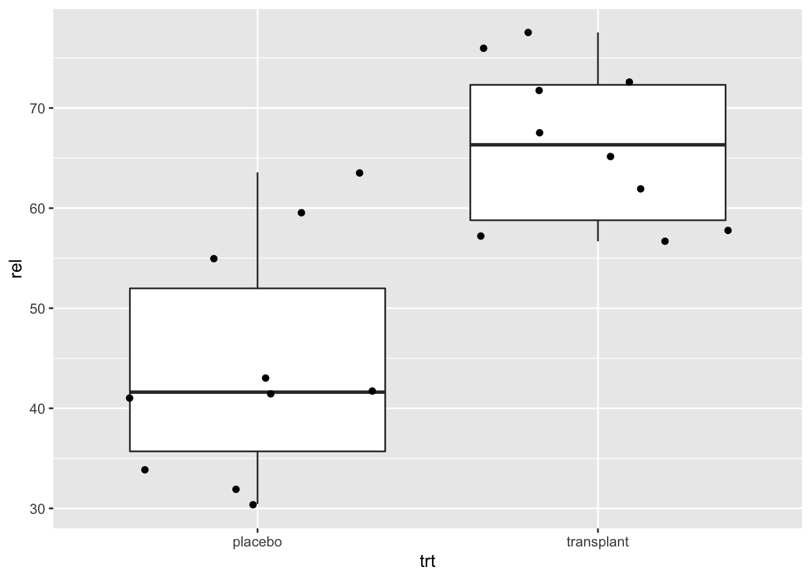
Dot-plots zijn bijzonder interessant in pre-test post-test designs waar dezelfde subjecten op verschillende tijdstippen worden geobserveerd. In dat geval kunnen de uitkomsten uitgezet worden op de Y-as en de tijdstippen op de X-as, en kunnen de metingen voor eenzelfde subject worden verbonden met een lijn.
Een voorbeeld hiervan is weergegeven in Figuur 4.6. De figuur vat de gegevens samen van de captopril studie die de centrale dataset vormt van Hoofdstuk 5. In de studie wenst men het effect van een bloeddrukverlagend geneesmiddel captopril evalueren. Voor elke patiënt in de studie werd de systolische bloeddruk twee keer gemeten: één keer voor en één keer na de behandeling met het bloeddruk verlagende medicijn captopril. In Figuur 4.6 worden de metingen van dezelfde patiënt met een lijntje verbonden. Hierdoor krijgen we een heel duidelijk beeld van de gegevens. Namelijk, we krijgen een sterke indruk dat de bloeddruk daalt na het toedienen van captopril gezien we bijna voor alle patiënten een daling observeren.
#Eerst lezen we de data in.
#Deze bevindt zich in de subdirectory dataset
#Het is een tekstbestand waarbij de kolommen van elkaar gescheiden zijn d.m.v comma's.
#sep=","
#De eerste rij bevat de namen van de variabelen
captopril <- read.table("https://raw.githubusercontent.com/statOmics/sbc20/master/data/captopril.txt",header=TRUE,sep=",")
head(captopril)## id SBPb DBPb SBPa DBPa
## 1 1 210 130 201 125
## 2 2 169 122 165 121
## 3 3 187 124 166 121
## 4 4 160 104 157 106
## 5 5 167 112 147 101
## 6 6 176 101 145 85captoprilTidy <-
captopril %>%
gather(type,bp,-id)
captoprilTidy %>%
filter(type%in%c("SBPa","SBPb")) %>%
mutate(type = factor(
type,
levels = c("SBPb","SBPa"))
) %>%
ggplot(aes(x=type,y=bp)) +
geom_line(aes(group = id)) +
geom_point()Figuur 4.6: Dotplot van de systolische bloeddruk in de captopril studie voor en na het toedienen van het bloeddruk verlagend middel captopril.
4.7 Associatie tussen twee continue variabelen
We zullen dit opnieuw illustreren aan de hand van de NHANES studie. We bestuderen hierbij lengte en gewicht bij vrouwen.
We voeren eerst een data exploratie uit waarbij we
- De volwassen vrouwen filteren uit de dataset
- In het ggplot commando de lengte selecteren in de x-as en het gewicht in de y-as.
- Een laag toevoegen d.m.v.
geom_pointom een scatterplot te bekomen van y i.f.v. x.
NHANES%>%
filter(Age >= 18 & Gender=="female") %>%
ggplot(aes(x=Height,y=Weight)) +
geom_point()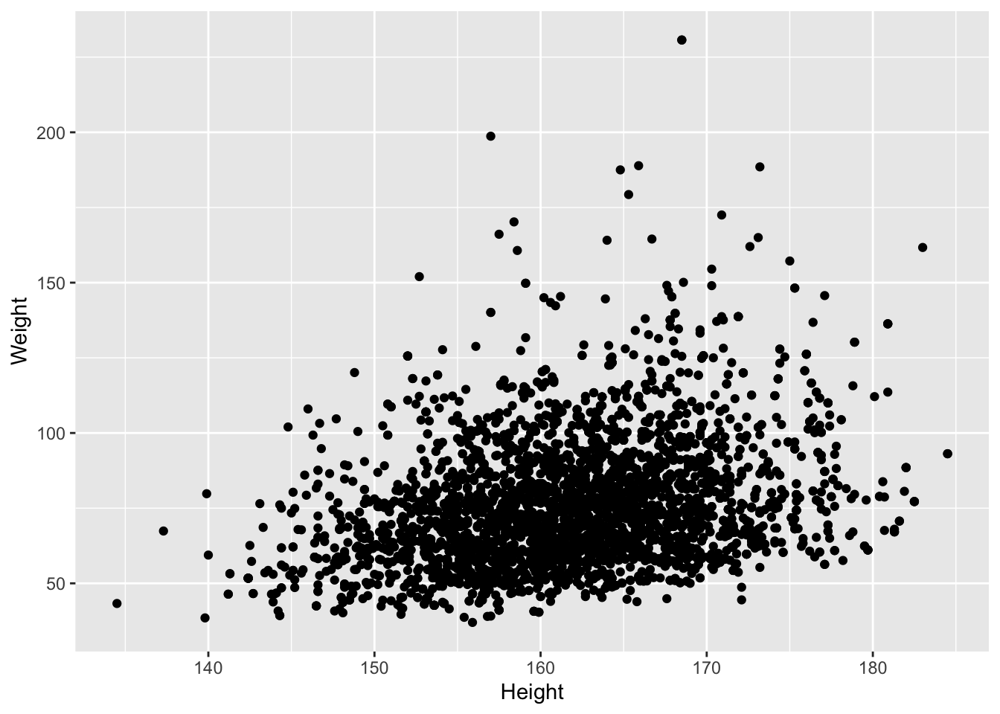
Er is een duidelijke associatie tussen gewicht en lengte: als de lengte stijgt dan stijgt het gewicht gemiddeld ook. Er is echter veel variabiliteit en ook een indicatie dat het gewicht is scheef verdeeld naar rechts.
We exploreren eerst de data univariaat: variabele per variabele. Om een histogram en QQ-plot naast elkaar af te beelden slaan we de plots eerst op als een object en maken we gebruik van de grid.arrange functie van het gridExtra package om de plots naast elkaar te plotten.
p1 <- NHANES%>% filter(Age >= 18 & Gender=="female") %>%
ggplot(aes(x=Height)) +
geom_histogram(aes(y=..density.., fill=..count..)) +
xlab("Height") +
ggtitle("All females in study") +
geom_density(aes(y=..density..))
p2 <- NHANES%>% filter(Age >= 18 & Gender=="female") %>%
ggplot(aes(sample=Height)) +
geom_qq() +
geom_qq_line()
grid.arrange(p1,p2,ncol=2)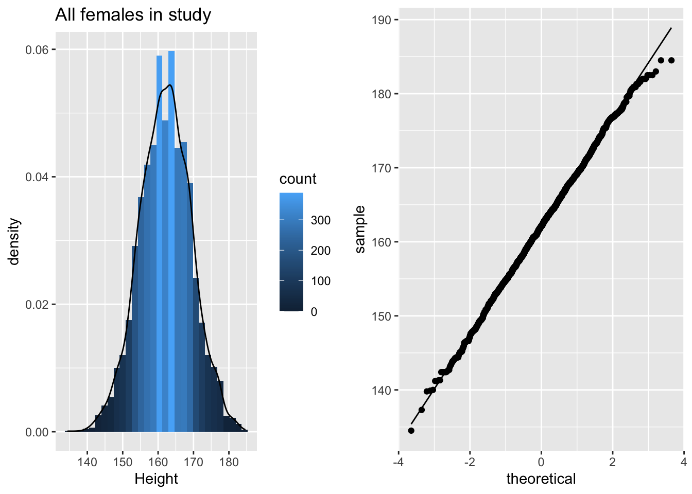
De lengte data zijn duidelijk approximatief normaal verdeeld.
p3 <- NHANES%>% filter(Age >= 18 & Gender=="female") %>%
ggplot(aes(x=Weight)) +
geom_histogram(aes(y=..density.., fill=..count..)) +
xlab("Weight") +
ggtitle("All females in study") +
geom_density(aes(y=..density..))
p4 <- NHANES%>% filter(Age >= 18 & Gender=="female") %>%
ggplot(aes(sample=Weight)) +
geom_qq() +
geom_qq_line()
grid.arrange(p3,p4,ncol=2)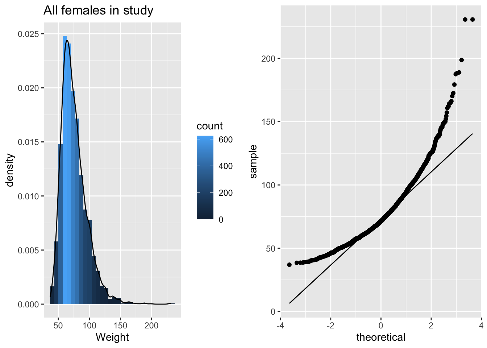
De gewichtsdata zijn inderdaad scheef verdeeld!
Na log transformatie zijn de gewichtsdata minder scheef, maar nog steeds niet Normaal verdeeld.
p5 <- NHANES%>% filter(Age >= 18 & Gender=="female") %>%
ggplot(aes(x=Weight%>%log2)) +
geom_histogram(aes(y=..density.., fill=..count..)) +
xlab("Weight (log2)") +
ggtitle("All females in study") +
geom_density(aes(y=..density..))
p6<- NHANES%>% filter(Age >= 18 & Gender=="female") %>%
ggplot(aes(sample=Weight%>%log2)) +
geom_qq() +
geom_qq_line()
grid.arrange(p5,p6,ncol=2)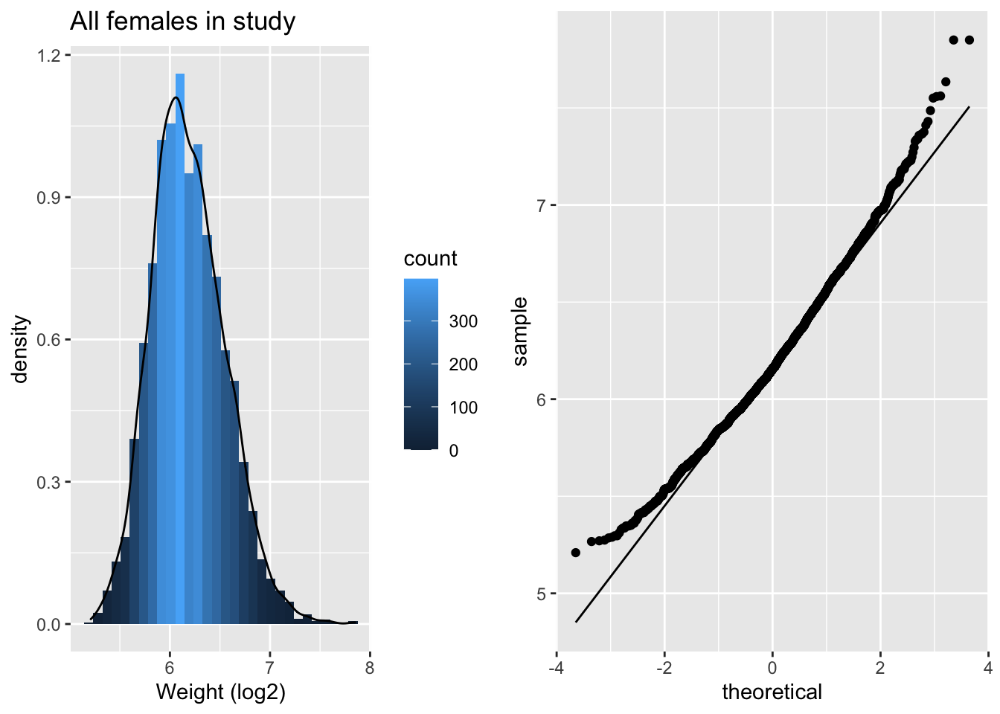
De scheefheid is er nog maar is sterk gereduceerd. We maken nu een plot van lengte in functie van het log\(_2\) getransformeerde gewicht.
NHANES%>% filter(Age >= 18 & Gender=="female") %>%
ggplot(aes(x=Height,y=Weight %>% log2)) +
ylab("Weight (log2)") +
geom_point()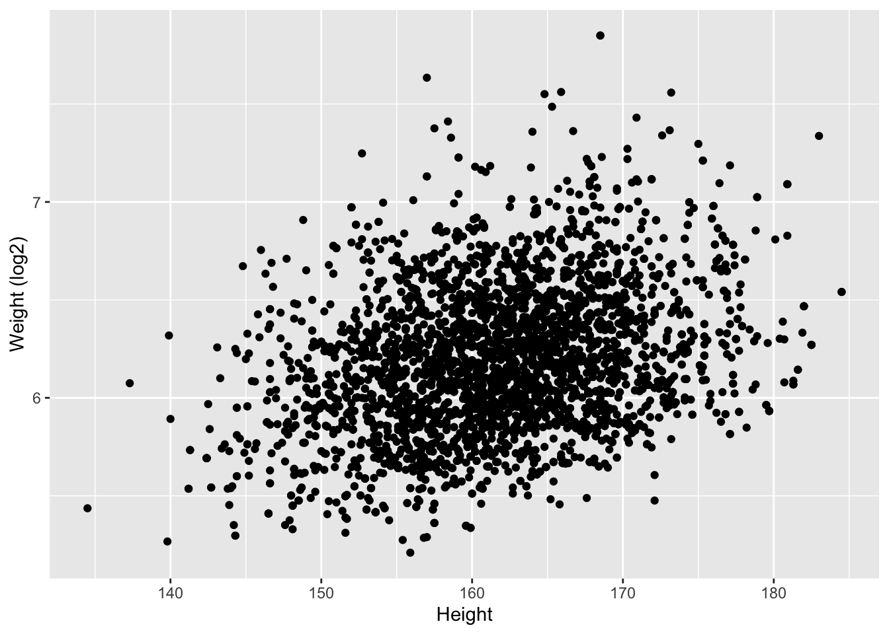
We introduceren nu een statistiek om de associatie te schatten: de correlatie.
4.7.1 Covariantie en Correlatie
Stel dat X en Y continue toevallig veranderlijken zijn
- Voor elk subject i observeren we dus \((X_i,Y_i)\).
- Covariantie: hoe variëren \(X_i\) en \(Y_i\) rond hun gemiddelde \((E[X],E[Y])\)?
\[\mbox{Covar}(X,Y)=E[(X-E[X])(Y-E[Y])]\]
- De covariantie is dus de verwachte waarde van het product van de afwijking van de X waarde t.o.v. zijn verwachte waarde E[X] en de afwijking van de Y waarde t.o.v.zijn verwachte waarde E[Y].
We kunnen de covariantie nu ook standardiseren zodat we een maat krijgen die voor elke dataset vergelijkbaar wordt: de correlatie. We doen dit door de covariantie te delen door de standaardafwijking van elke variabele:
\[\mbox{Cor}(X,Y)=\frac{E[(X-E[X])(Y-E[Y])]}{\sqrt{E[(X-E[X])^2}\sqrt{E[(Y-E[Y])^2}}\]
4.7.2 Pearson Correlatie
We introduceren nu een schatter voor de correlatie tussen twee continue toevallig veranderlijken op basis van de data in de steekproef:
\[ \mbox{Cor}(X,Y)=\frac{\sum_{i=1}^{n}(x_{i}-\bar{x})(y_{i}-\bar{y})}{(n-1)s_{x}s_{y}} \]
We vervangen de verwachte waarden weer door het steekproefgemiddelden \(\bar x\) en \(\bar y\), en, we berekenen het gemiddeld product van de afwijkingen in x en y in de steekproef. Let op dat we hierbij weer corrigeren voor het aantal vrijheidsgraden. We geven elke observatie geen gewicht van 1/n maar van 1/(n-1). We hebben inderdaad het gemiddelde geschat, hier is dat gemiddelde bivariaat (het heeft een x en y coordinaat).
Deze schatter wordt ook wel de Pearson correlatie genoemd en heeft volgende eigenschappen:
Er is een positieve correlatie wanneer \(y\) gemiddeld toeneemt bij een toename van: \(x \ \nearrow \ \Rightarrow \ y \ \nearrow\)
Er is een negatieve correlatie als \(y\) gemiddeld afneemt bij een toename in \(x\): \(x \ \nearrow \ \Rightarrow \ y \ \searrow\)
De correlatie ligt ook altijd tussen -1 en 1
In de figuur 4.7 wordt de bijdrage weergegeven van individuele metingen in de correlatie. Als punten in het 1ste en 3de kwadrant liggen is er een negatieve bijdrage van de observatie in de correlatie, als ze in het 2de en 4de kwadrant liggen is er een positieve bijdrage.
Figuur 4.7: Bijdrage van individuele metingen in de correlatie.
We berekenen vervolgens de correlatie voor lengte, gewicht en het log getransformeerde gewicht.
NHANES%>%
filter(Age >= 18 & Gender=="female") %>%
select(Weight,Height) %>%
mutate(log2Weight=Weight%>%log2) %>%
na.exclude %>%
cor## Weight Height log2Weight
## Weight 1.0000000 0.2845792 0.9811638
## Height 0.2845792 1.0000000 0.3074578
## log2Weight 0.9811638 0.3074578 1.0000000Merk op dat:
- De correlatie lager is als de data niet worden getransformeerd.
- De Pearson correlatie is gevoelig voor outliers!
- Gebruik de Pearson correlatie niet voor scheef verdeelde data of data met outliers!
4.7.2.1 Impact van outliers
In figuur 4.8 wordt de impact van outliers op de Pearson correlatie geïllustreerd d.m.v. gesimuleerde data met één outlier. We zien dat de correlatie bijna halveert ten gevolge van de outlier!
set.seed(100)
x <- rnorm(20)
simData <- data.frame(x=x,y=x*2 + rnorm(length(x)))
p1 <- simData %>% ggplot(aes(x=x,y=y)) +
geom_point() +
ggtitle(paste("cor =",cor(simData[,1],simData[,2]) %>% round(.,2)))
outlier<- rbind(simData,c(2,-4))
p2 <- outlier %>% ggplot(aes(x=x,y=y)) +
geom_point() +
ggtitle(paste("cor =",cor(outlier[,1],outlier[,2]) %>% round(.,2)))
grid.arrange(p1,p2,ncol=2)Figuur 4.8: Correlatie van gesimuleerde data met 1 outlier
4.7.2.2 De Pearson correlatie pikt enkel linear associatie op
In figuur 4.9 simuleren we data met een kwadratisch verband en observeren we dat de correlatie bijna nul is!
x <- rnorm(100)
quadratic <- data.frame(x=x,y=x^2 + rnorm(length(x)))
quadratic %>% ggplot(aes(x=x,y=y)) +
geom_point() +
ggtitle(paste("cor =",cor(quadratic[,1],quadratic[,2]) %>% round(.,2))) +
geom_hline(yintercept = mean(quadratic[,2]),col="red") +
geom_vline(xintercept = mean(quadratic[,1]),col="red")Figuur 4.9: Correlatie van gesimuleerde data met een kwadratisch verband. De data in de bovenste kwadranten compenseren elkaar als het ware alsook in de onderste kwadranten (ongeveer evenveel positieve en negatieve bijdragen door de data in de correlatie)
4.7.3 Verschillende groottes van correlatie
Om een inzicht te krijgen in de grootte van de correlatie, simuleren we data met een verschillende correlatie. We geven telkens de correlatie weer boven de plot. Hoe sterker de correlatie hoe meer de puntenwolk naar een lineair verband toegaat.
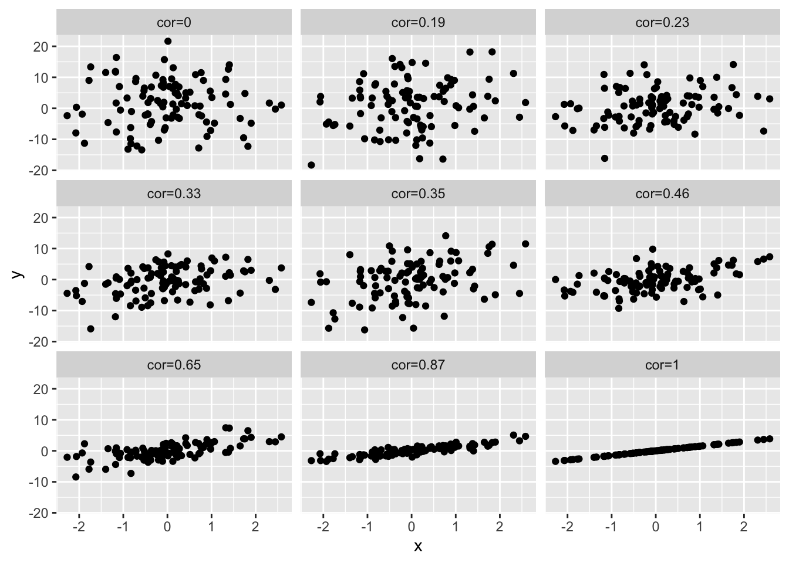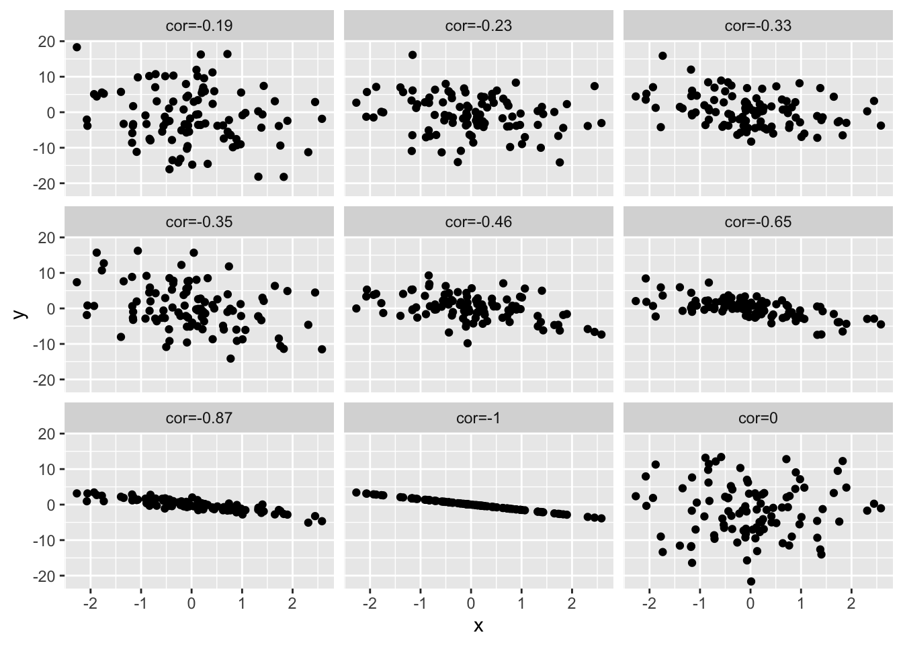
4.7.4 Spearman correlatie
De Spearman correlatie is de Pearson correlatie na transformatie van de data naar ranks. Hierdoor wordt deze schatter minder gevoelig voor outliers.
- Pearson correlatie
cor(outlier)## x y
## x 1.0000000 0.4682823
## y 0.4682823 1.0000000- Spearman correlatie
cor(outlier,method="spearman")## x y
## x 1.0000000 0.6571429
## y 0.6571429 1.0000000We verifiëren dat de Spearman correlatie de Pearson correlatie is van rang getransformeerde data. Die wordt bekomen door de observaties te ordenen van klein naar groot en elke observatie te vervangen door zijn rangorde.
rankData<-apply(outlier,2,rank)
cor(rankData)## x y
## x 1.0000000 0.6571429
## y 0.6571429 1.0000000We berekenen nu de Spearman correlatie in de NHANES studie. We observeren dat de correlatie tussen lengte en gewicht, en lengte en log2 getransformeerd gewicht exact gelijk is. Dat is logisch want de log-transformatie is een monotone transformatie en verandert de ordening van de data dus niet, de ranks van gewicht en deze van het log gewicht zijn identiek!
NHANES%>%
filter(Age >= 18 & Gender=="female") %>%
select(Weight,Height) %>%
mutate(log2Weight=Weight%>%log2) %>%
na.exclude %>%
cor(method="spearman")## Weight Height log2Weight
## Weight 1.0000000 0.2892776 1.0000000
## Height 0.2892776 1.0000000 0.2892776
## log2Weight 1.0000000 0.2892776 1.0000000Bij het interpreteren van correlaties, alsook bij het uitvoeren van regressie-analyses in de volgende secties, zijn de volgende waarschuwingen van zeer groot belang:
Correlaties zijn het makkelijkst te interpreteren tussen 2 groepen Normaal verdeelde observaties. Een kleine training laat immers toe om snel inzicht te krijgen in de grootte van de correlatiecoëfficiënt zonder zich verder over de specifieke verdeling te hoeven bekommeren. In het bijzonder kan men voor Normaal verdeelde observaties visueel inzicht krijgen in de sterkte van de correlatie door een ellips rond de puntenwolk te tekenen die (nagenoeg) alle punten bevat. Als de ellips op een cirkel lijkt, dan is er geen correlatie. Hoe dunner de ellips, hoe sterker de correlatie. De oriëntatie van de ellips geeft hierbij het teken van de correlatie weer.
Voor niet-Normale gegevens hangt de betekenis van een correlatiecoëfficiënt van zekere grootte, nauw samen met de specifieke vorm van de verdeling. Wanneer de 2 variabelen die we onderzoeken niet Normaal verdeeld zijn, dan zijn er 2 mogelijkheden om een zinvolle correlatiecoëfficiënt weer te geven. Variabelen die scheef verdeeld zijn, kan men transformeren (bvb. een log-transformatie) in de hoop dat de getransformeerde gegevens bij benadering Normaal verdeeld zijn en lineair samenhangen.
Merk op dat een correlatiecoëfficiënt van 0 tussen 2 variabelen \(X\) en \(Y\) niet noodzakelijk impliceert dat deze variabelen onafhankelijk zijn. Zie kwadratisch verband! Daarom is het van belang om de aard van samenhang tussen 2 variabelen steeds te onderzoeken via een scatterplot alvorens een correlatiecoëfficiënt te rapporteren. Wanneer het verband monotoon is, maar sterk niet-lineair is, dan is het aangewezen om niet de Pearson correlatiecoëfficiënt, maar Spearman’s correlatiecoëfficiënt te rapporteren. Indien het verband niet-monotoon is, dan zijn correlatiecoëfficiënten niet geschikt en moet men overstappen op meer geavanceerde regressietechnieken.
Bij jonge kinderen is de grootte van hun schoenmaat uiteraard sterk gecorreleerd met hun leescapaciteiten. Dat op zich impliceert echter niet dat het leren van nieuwe woorden hun voeten doet groeien of dat het groeien van hun voeten impliceert dat ze beter kunnen lezen. Ook algemeen21 hoeft een correlatie tussen 2 variabelen niet te impliceren dat er een causaal verband is. De relatie tussen 2 metingen kan immers sterk verstoord worden door confounders (bvb. de leeftijd in bovenstaand voorbeeld). Hoewel dit overduidelijk is in bovenstaand voorbeeld, is het in vele andere contexten veel minder duidelijk en worden er, vooral in de populaire literatuur, vaak causale beweringen gemaakt die niet (volledig) door de gegevens worden gestaafd. Volgend voorbeeld illustreert dit. Denk hierbij aan het voorbeeld van de associatie van groente consumptie en covid mortaliteit.
Een ecologische analyse is een statistische analyse waarbij men associaties bestudeert tussen samenvattingsmaten (zoals gemiddelden, incidenties, …) die reeds berekend werden voor groepen subjecten. Dit is het geval bij het covid voorbeeld uit de introductie waarbij men mortaliteit modellereert in functie van de gemiddelde dagelijkse groenteconsumptie per capita in verschillende landen. Wanneer men aldus een ecologische correlatie vaststelt voor groepen subjecten of individuen (in dit geval,landen), impliceert dat niet noodzakelijk dat deze correlatie ook voor de subjecten zelf opgaat22. Volgend voorbeeld illustreert dit.
Voor de 48 staten in de V.S. werden telkens 2 getallen berekend: het percentage van de mensen die in een ander land geboren zijn en het percentage geletterden. De correlatie ertussen bedraagt 0.53 (Robinson, 1950). Dit is een ecologische correlatie omdat de eenheid van de analyse de groep residenten uit een zelfde staat is, en niet de individuele residenten zelf. Deze ecologische correlatie suggereert dat mensen van vreemde afkomst doorgaans beter geschoold zijn (in Amerikaans Engels) dan de oorspronkelijke inwoners. Wanneer men echter de correlatie berekent op basis van de gegevens voor alle individuele residenten, bekomt men -0.11. De ecologische analyse is hier duidelijk misleidend: het teken van de correlatie is er positief omdat mensen van vreemde origine de neiging hebben om te gaan wonen in staten waar de oorspronkelijke bevolking relatief goed geschoold is.
Einde voorbeeld
4.8 Onvolledige gegevens
Het gebeurt vaak in de biowetenschappen dat, ondanks zorgvuldig veld- en laboratoriumwerk, metingen die men plande te verzamelen, niet bekomen werden. Men noemt deze dan ontbrekende gegevens of missing data (points).
Minder drastisch, kunnen observaties soms slechts ten dele gekend zijn. Bijvoorbeeld bij een studie van de overlevingsduur van dieren en planten wacht men niet steeds tot alle subjecten gestorven zijn. Op het eind van de studie zal men bijvoorbeeld voor een 50-jarige olifant die in leven is, slechts weten dat de overlevingstijd minstens 50 jaar bedraagt, maar niet de exacte waarde kennen. Zo’n gegeven wordt rechts-gecensureerd genoemd: we weten dat de gewenste observatie rechts van 50 ligt, maar verder niets meer.
Analoog kunnen observaties links-gecensureerd zijn. Bij het meten van bepaalde concentraties kan een detectielimiet bestaan: een ondergrens beneden dewelke het meettoestel geen aanwezigheid kan detecteren. Men weet in zo’n geval dat de concentratie kleiner dan die ondergrens is, maar niet hoeveel kleiner.
Tenslotte vermelden we nog interval-gecensureerde gegevens. Bij het screenen naar HIV bijvoorbeeld, zal men weten dat een subject seropositief geworden is ergens tussen de laatste negatieve HIV test en de eerste positieve HIV test, maar het exacte tijdstip van seroconversie blijft onbekend.
De aanwezigheid van gegevens die niet of slechts partieel zijn opgemeten zorgt altijd voor extra moeilijkheden bij de analyse en interpretatie van de onderzoeksresultaten. Dat is omdat de missende gegevens mogelijks afkomstig zijn van een speciale populatie. Dat is het meest duidelijk in klinische experimenten bij mensen. Patiënten zullen hier vaak de studie verlaten wanneer ze genezen zijn, in welk geval men de metingen van deze patiënten niet te zien krijgt. Dit negeren door enkel de aanwezige gegevens te analyseren, zal de resultaten er slechter doen uitzien dan ze in werkelijkheid zijn. Meestal houdt dat immers de veronderstelling in dat de aanwezige gegevens representatief blijven voor de populatie die men wenst te bestuderen. Dit kan in sommige gevallen de resultaten sterk vertekenen. In de statistische literatuur zijn de laatste jaren heel wat complexe technieken ontwikkeld om hiervoor te corrigeren. Deze technieken worden meer en meer in de statistische software ingebouwd en recent heeft ook R verschillende bibliotheken toegevoegd. Het is echter aangewezen om voor het gebruik van deze gevorderde technieken een statisticus te consulteren.
4.9 Clips over de code in dit hoofdstuk
- Univariate exploratie van continue variabelen
- Beschrijvende statistiek
- Normale benadering
- Associatie van twee continue Variabelen
Later zullen we zien dat het nog iets correcter is om te stellen dat 95% van de waarnemingen liggen tussen \(\bar{x} - 1.96 s_x\) en \(\bar{x} + 1.96 s_x\).↩︎
Merk op dat dit design niet optimaal is omdat replicaties op de verkeerde schaal werden bekomen. Idealiter moesten meer dan 2 stukken grond in de studie opgenomen worden omdat de 2 gekozen stukken grond in veel meer kunnen verschillen dan alleen het bodemtype. Verschillen in de verdeling van houtluizen kunnen bijgevolg niet zomaar aan het bodemtype kunnen toegeschreven worden.↩︎
Al is het nog de vraag of die associatie toevallig is, dan wel systematisch. We komen in het hoofdstuk 9. terug op technieken om dit te onderzoeken.↩︎
Dit is bijvoorbeeld het geval in logistische regressiemodellen die gebruikt worden om het risico op een bepaalde aandoening te modelleren in functie van prognostische factoren.↩︎
In het Engels is dit welbekend onder de zinsnede `Association is not causation!’.↩︎
In het Engels is dit welbekend onder de naam `ecological fallacy’.↩︎